Whole numbers
In this chapter you will
engage with different kinds of numbers that are used for
counting, measuring, solving equations and many other
purposes.
Properties of numbers
different types of
numbers
The natural numbers
The numbers that we use to count are
called natural numbers:
\(1 \quad 2 \quad 3 \quad 4 \quad 5 \quad 6 \quad 7 \quad 8 \quad 9 \quad 10 \quad 11 \quad 12 \quad 13 \quad 14\)
Natural numbers
have the following properties:
When you add two or more
natural numbers, you get a natural number again.
When you multiply two or
more natural numbers, you get a natural number again.
Mathematicians describe this by
saying: The system of natural numbers is closed under
addition and multiplication.
However, when a natural number is
subtracted from another natural number the answer is not always
a natural number again. For example, there is no natural number
that provides the answer to \(5 - 20\).
Similarly, when a natural
number is divided by another natural number the answer is not
always a natural number again. For example, there is no natural
number that provides the answer to \(10 \div 3\).
When subtraction or
division is done with natural numbers, the answers are not
always natural numbers.
The system of natural numbers
is not closed under subtraction or division.
Is there a smallest natural number, that means a natural number that is smaller than all other natural
numbers? If so, what is it?
Is there a largest natural number, in other words, a natural number that is larger than all
other natural numbers? If so, what is it?
In each of the following cases, say whether the answer is a natural number or not.
- \(100 + 400\)
- \(100 - 400\)
- \(100 \times 400\)
- \(100 \div 400\)
The whole numbers
Although we don't use 0 for counting,
we need it to write numbers. Without 0, we would need a special
symbol for 10, all multiples of 10 and some other numbers. For
example, all the numbers that belong in the yellow cells below
would need a special symbol.
|
41
|
42
|
43
|
44
|
45
|
46
|
47
|
48
|
49
|
|
51
|
52
|
53
|
54
|
55
|
56
|
57
|
58
|
59
|
|
61
|
62
|
63
|
64
|
65
|
66
|
67
|
68
|
69
|
|
71
|
72
|
73
|
74
|
75
|
76
|
77
|
78
|
79
|
|
81
|
82
|
83
|
84
|
85
|
86
|
87
|
88
|
89
|
|
91
|
92
|
93
|
94
|
95
|
96
|
97
|
98
|
99
|
|
|
|
|
|
|
|
|
|
|
|
111
|
112
|
113
|
114
|
115
|
116
|
117
|
118
|
119
|
The natural numbers combined with 0
is called the system of whole numbers.
If you are working with natural numbers and you
add two numbers, the answer will always be different from any
of the two numbers added. For example: \(21 + 25 = 46\) and \(24 + 1 =
25\). If you are working with whole numbers, in other words
including 0, this is not the case. When 0 is added to a number
the answer is just the number you start with: \(24 + 0 = 24\).
For this reason, 0 is
called the identity element for addition. In the set of
natural numbers there is no identity element for addition.
Is there an identity element for multiplication in the whole
numbers? Explain your answer.
-
What is the smallest
natural number?
What is the smallest whole number?
The integers
In the set of whole numbers, no
answer is available when you subtract a number from a number
smaller than itself. For example there is no whole number that
is the answer for \(5 - 8\). But there is an
answer to this subtraction in the system of integers.
\(5 - 8 = -3\). The number
\(-3\) is read as "negative 3" or "minus 3".
The whole numbers start with 0 and extend in
one direction:
\[0 \quad 1 \quad 2 \quad 3 \quad 4 \quad 5 \quad 6 \quad \rightarrow \quad \rightarrow \quad \rightarrow \quad ......\]
The integers extend in both directions:
\[...... \quad \leftarrow \quad \leftarrow \quad \leftarrow \quad -5 \quad -4 \quad -3 \quad -2 \quad -1 \quad 0 \quad 1 \quad
2 \quad 3 \quad 4 \quad 5 \quad 6 \quad \rightarrow \quad \rightarrow \quad \rightarrow \quad ......\]
All whole numbers are also integers. The
set of whole numbers forms part of the set of integers. For
each whole number, there is a negative number that corresponds
with it. The negative number -5 corresponds
to the whole number 5 and the negative number
-120 corresponds to the whole number
120.
Within the set of integers, the sum of two
numbers can be 0.
For example \(20 + (-20) = 0 \)
and \(135 + (-135) = 0\).
20 and -20 are called additive inverses
of each other.
Calculate the following without using a calculator.
- \(100-165\)
- \(300-765\)
You may use a calculator to calculate the following:
- \(123-765\)
- \(385-723\)
The rational
numbers

Five people share 12 slabs of
chocolate equally among them.
Will each person get more or less than two full slabs of chocolate?
Can each person get another half of a slab?
How
much more than two full slabs can each person get, if the
two remaining slabs are divided as shown here?
Will each person get \(2\), \(4\) or |(2\frac{2}{5}\) slab?
The system of integers does not
provide an answer for all possible division questions. For
example, as we see above, the answer for 12 \div 5 is not an
integer.
To have answers for all possible division
questions, we have to extend the number system to include
fractions and negative fractions, in other words, numbers of
the form \(\frac{\text{integer}}{\text{integer}}\). This system of numbers is called
the rational numbers. We can represent rational numbers as common fractions
or as decimal numbers.
Express the answers
for each of the following division problems in two ways: using
the common fraction notation and using the decimal notation for
fractions.
- \(23 \div 10\)
- \(23 \div 5\)
- \(230 \div 100\)
- \(8 \div 10\)
Answer the statement by writing 'yes' or 'no' in the appropriate cell.
|
|
|
|
|
|
|
The sum of two numbers is a
number of the same kind (closed under addition).
|
|
|
|
|
|
The sum of two numbers is
always bigger than either of the two numbers.
|
|
|
|
|
|
When one number is
subtracted from another, the answer is a number of the
same kind (closed under subtraction).
|
|
|
|
|
|
When one number is
subtracted from another, the answer is always smaller
than the first number.
|
|
|
|
|
|
The product of two numbers
is a number of the same kind (closed under
addition).
|
|
|
|
|
|
The product of two numbers
is always bigger than either of the two numbers.
|
|
|
|
|
|
The quotient of two numbers
is a number of the same kind (closed under
division).
|
|
|
|
|
|
The quotient of two numbers
is always smaller than the first of the two
numbers.
|
|
|
|
|
Irrational numbers
Rational numbers do not provide for
all situations that may occur in mathematics. For example,
there is no rational number which will produce the answer 2
when it is multiplied by itself.
\((\text{number}) \times (\text{same number}) = 2\)
\(2 \times 2 = 4\) and \(1 \times 1 = 1\), so clearly,
this number must be between 1 and 2.
But there is no number which can be expressed
as a fraction, in either the common fraction or the decimal
notation, which will solve this problem. Numbers like these are
called irrational numbers.
Here are some more examples of irrational
numbers:
\[\sqrt{5} \quad \sqrt{10} \quad \sqrt{3} \quad \sqrt{7} \quad \pi \]
The rational and the irrational
numbers together are called the real numbers.
Calculations with whole numbers
Do not use a
calculator at all in Section 1.2.
estimating, rounding off and
compensating
-
A shop owner wants to buy chickens from a farmer. The farmer wants R38 for each chicken. Answer the following questions without doing written calculations.
If the shop owner has R10 000 to buy chickens, do you think he can buy more than 500 chickens?
Do you think he can buy more than 200 chickens?
Do you think he can buy more than 250 chickens?
What you were trying to do in
question 1 is called estimation. To estimate, when
working with numbers, means to try to get close to an answer
without actually doing the calculations. However, you can do
other, simpler calculations to estimate.
When the goal is not to
get an accurate answer, numbers may be rounded off. For
example, the cost of 51 chickens at R38 each may be
approximated by calculating \(50 \times 40\). This is
clearly much easier than calculating \(51 \times R38\).
To approximate something means
to try to find out more or less how much it is, without
measuring or calculating it precisely.
- How much is \(5 \times 4\)?
- How much is \(5 \times 40\)?
- How much is \(50 \times 40\)?
The cost of 51 chickens at R38 each
is approximately R2 000.
This approximation was
obtained by rounding both 51 and 38 off to the nearest multiple
of 10, and then calculating with the multiples of 10.
In each case, estimate the cost by rounding off to calculate the approximate cost, without using a calculator. In each case make two estimates. First make a rough estimate by rounding the numbers off to the nearest 100 before calculating. Then make a better estimate by rounding the numbers off to the nearest 10 before
calculating.
83 goats are sold for R243 each.
121 chairs are sold for R258 each.
R5 673 is added to R3 277.
R874 is subtracted from R1 234.
Suppose you have to calculate \(\text{R}823
- \text{R}273\).
An estimate can be made by rounding
the numbers off to the nearest 100:
\(\text{R}800 - \text{R}300 = \text{R}500\).
By working with R800 instead of R823, an error was introduced into your answer. How can this error be corrected: by adding R23 to the R500, or by subtracting it from R500?
Correct the error to get a better estimate.
Now also correct the error that was made by subtracting R300 instead of R273.
What you did in question 4 is called compensating for errors.
Estimate each of the following by rounding off the numbers to the nearest 100.
- \(812 - 342\)
- \(2 342 - 1 876\)
- \(812 + 342\)
- \(2 342 + 1 876\)
- \(9 + 278\)
- \(3 231 - 1 769\)
- \(8 234 - 2 776\)
- \(5 213 - 3 768\)
Find the exact answer for each of the calculations in question 5, by working out the errors caused by rounding, and compensating for them.
adding in columns
-
Write \(8 000 + 1 100 + 130 + 14\) as a single number:
Write \(3 000 + 700 + 50 + 8\) as a single number:
Write \(5 486\) in expanded notation, as shown in 1(b).
You can calculate \(3 758 + 5 486\) as shown on the left below.
|
3
758
|
You can do this in short,
as shown on the right. This is a bit harder on the
brain, but it saves paper!
|
3 758
|
|
5
486
|
5 486
|
|
Step
1
|
8
000
|
9 244
|
|
Step
2
|
1
100
|
|
|
Step
3
|
130
|
|
|
Step
4
|
14
|
|
|
9
244
|
|
Explain how the numbers in each of steps 1 to 4 are obtained.
It is only possible to use the shorter method if you add the units first, then add the tens, then the hundreds and finally, the thousands. You can then do what you did in question 1(a), without writing the separate terms of the expanded form.
Calculate each of the following without using a calculator.
- \(3 878 + 3 784\)
- \(298 + 8 594\)
- \(10 921 + 2 472\)
- \(1 298 + 18 782\)
A farmer buys a truck for R645 840, a tractor for R783 356, a plough for R83 999 and a bakkie for R435 690.
Estimate to the nearest R100 000 how
much these items will cost altogether.
Use a calculator to calculate the total
cost.
An investor makes R543
682 in one day on the stock market and then loses R264 359 on
the same day.
Estimate to the nearest R100 000 how
much money she has made in total on that day.
Use a calculator to determine how much
money she has made.
multiplying in columns
-
- Write 3 489 in expanded
notation:
- Write an expression
without brackets that is equivalent to \(7 \times (3 000 + 400 + 80 + 9)\):
\(7 \times 3 489\)
may be calculated as shown on the left below.
|
3
489
|
A shorter method is shown
on the right.
|
3
489
|
|
\(\times
7\)
|
\(\times
7\)
|
|
Step
1
|
63
|
24
423
|
|
Step
2
|
560
|
|
|
Step
3
|
2
800
|
|
|
Step
4
|
21
000
|
|
|
24
423
|
|
Explain how the numbers in
each of steps 1 to 4 on the above left are obtained.
\(47 \times 3 489\)
may be calculated as shown on the left below.
|
3
489
|
A shorter method is shown
on the right.
|
3
489
|
|
\(\times
47\)
|
\(\times
47\)
|
|
Step
1
|
63
|
24
423
|
|
Step
2
|
560
|
139
560
|
|
Step
3
|
2
800
|
163
983
|
|
Step
4
|
21
000
|
|
|
Step
5
|
360
|
|
Step
6
|
3
200
|
|
Step
7
|
16
000
|
|
Step
8
|
120
000
|
|
163
983
|
-
Explain how the numbers in
each of steps 5 to 8 on the above left are obtained.
-
Explain how the number
139 560 that appears in the shorter form on the above right is
obtained.
subtracting in columns
-
Write each of the following as
a single number.
- \(8 000 + 400 + 30 + 2\)
- \(7 000 + 1 300 + 120 +12\)
- \(3000 + 900 + 50 + 7\)
If you worked correctly you should have obtained the same
answers for questions 1(a) and 1(b). If this was not the case,
redo your work.
The expression \(7 000 + 1 300 + 120 +
12\) was formed from \(8 000 + 400 + 30 + 2\) by
-
taking 1 000 away from 8 000 and adding it to the hundreds term to get
1 400,
-
taking
100 away from 1 400 and adding it to the tens term to get
130, and
-
taking 10
away from 130 and adding it to the units term to get 12.
-
Form an expression like the
expression in 1(b) for each of the following:
- \(8 000 + 200 + 100 + 4\)
- \(3 000 + 400 + 30 + 1\)
-
Write expressions like in question 1(b) for the numbers
below.
- \(7 214\)
- \(8 103\)
\(8 432 - 3 957\)
can be calculated as shown below.
|
8432
|
To do the subtraction in
each column, you need to think of \(8 432\) as \(8 000 + 400
+ 30 + 2\), in fact you have to think of it as \(7 000 + 1 300 + 120 +
12\).
In step 1, the 7 of 3 957 is
subtracted from 12.
|
|
- 3
957
|
|
Step
1
|
5
|
|
Step
2
|
70
|
|
Step
3
|
400
|
|
Step
4
|
4
000
|
|
Step
5
|
4
475
|
-
- How is the 70 in step 2 obtained?
- How is the 400 in step 3 obtained?
- How is the 4 000 in step 4 obtained?
- How is the 4 475 in step 5 obtained?
Because of the zeros obtained in
steps 2, 3 and 4, the answers need not be written separately as
shown above. The work can actually be shown in the short way on
the right. |
8
432
|
|
-
3957
|
|
4
475
|
-
Calculate each of the
following without using a calculator.
- \(9 123 - 3 784\)
- \(8 284 - 3 547\)
Use a calculator to check your answers. If your answers are wrong, try again.
Calculate each of the following without using a calculator.
- \(7 243 - 3 182 \)
- \(6 221 - 1 888\)
You may use
a calculator to do the questions below.
Bettina has R87 456 in
her savings account. She withdraws R44 800 to buy a car. How
much money is left in her savings account?
-
Liesbet starts a
savings account by making a deposit of R40 000. Over a period
of time she does the following transactions on the savings
account:
a withdrawal of R4 000
a withdrawal of R2 780
a deposit of R1 200
a deposit of R7 550
a withdrawal of R5 230
a deposit of R8 990
a deposit of R1 234
How much money does she have in
her savings account now?
-
- \(\text{R}34 537 - \text{R}13 267\)
- \(\text{R}135 349 - \text{R}78 239\)
long division
Study this
method for calculating \(13 254 \div 56\):
|
13
254
|
|
|
\(\textbf{200} \times 56 = 11 200\)
|
11
200
|
(200 is a rough estimate of
the answer for \(13 254 \div 56\))
|
|
2
054
|
(2 054 remains after 11 200
is taken from 13 254)
|
|
\(\textbf{30} \times 56 = 1 680\)
|
1
680
|
(30 is a rough estimate of
the answer for 2 054 \div 56)
|
|
374
|
(374 remains after 1 680 is
taken from 2 054)
|
|
6 \times 56 = 336
|
336
|
(6 is an estimate of the
answer for 374 \div 56)
|
|
236
\times 56 = 13 216
|
38
|
(38 remains)
|
So 13 254 \div 56 = 236
remainder 38, or 13 254 \div 56 = 236  = 236
= 236  ,
,
which can also be written
as 236,68 (correct to two decimal figures).
The
work can also be set out as follows:
|
6
|
|
|
|
|
30
|
|
|
|
|
200
|
|
|
236
|
|
56
|
13
254
|
or
more briefly as
|
56
|
13
254
|
|
11
200
|
|
|
11
200
|
|
2
054
|
|
|
2
054
|
|
1
680
|
|
|
1
680
|
|
374
|
|
|
374
|
|
336
|
|
|
336
|
|
38
|
|
|
38
|
1. (a) Mlungisi's work to do a certain
calculation is shown on the right. What is the question that
Mlungisi tries to answer?
|
|
463
|
|
78
|
36
177
|
|
Step
1
|
|
31
200
|
|
Step
2
|
|
4
977
|
|
Step
3
|
|
4
680
|
|
Step
4
|
|
297
|
|
Step
5
|
|
234
|
|
|
63
|
(b) Where does the number 31
200 in step 1 come from? How did Mlungisi obtain it, and for
what purpose did he calculate it?
(c) Explain step 2 in the same way as you
explained step 1.
(d) Explain step 3.
2.
Calculate each of the following without using a calculator.
(a) 33 030 \div 63 (b) 18 450 \div 27
33 030 \div 63 = 520
remainder 18
18 450 \div 27 = 783
remainder 19
3.
Use a calculator to check your answers to question 2. If your
answers are wrong, try again. It is important that you learn to
do long division correctly.
4. Calculate each of the
following without using a calculator.
(a) 76 287 \div 287 (b) 65 309 \div 44
76 287 \div 287 = 265
remainder 232
65 309 \div 44 = 1 484
remainder 13
Use your
calculator to do questions 5 and 6 below.
5. A municipality has
budgeted R85 000 for putting up new street name boards. The
street name boards cost R72 each. How many new street name
boards can be put up, and how much money will be left in the
budget?
6. A furniture dealer
quoted R840 000 for supplying 3 450 school desks. A school
supply company quoted R760 000 for supplying 2 250 of the same
desks. Which provider is cheapest, and what do the two
providers actually charge for one school desk?
1.3 Multiples and factors
lowest common
multiples and prime factorisation
1. Consecutive multiples of 6,
starting at 6 itself, are shown in the table below.
|
6
|
12
|
18
|
24
|
30
|
36
|
42
|
48
|
54
|
60
|
|
66
|
72
|
78
|
84
|
90
|
96
|
102
|
108
|
114
|
120
|
|
126
|
132
|
138
|
144
|
150
|
156
|
162
|
168
|
174
|
180
|
|
186
|
192
|
198
|
204
|
210
|
216
|
222
|
228
|
234
|
240
|
(a) The table below also shows
multiples of a number. What is the number?
|
15
|
30
|
45
|
60
|
75
|
90
|
105
|
120
|
135
|
150
|
|
165
|
180
|
195
|
210
|
225
|
240
|
255
|
270
|
285
|
300
|
|
315
|
330
|
345
|
360
|
375
|
390
|
405
|
420
|
435
|
450
|
|
465
|
480
|
495
|
510
|
525
|
540
|
555
|
570
|
585
|
600
|
(b) Draw rough circles around
all the numbers that occur in both the above tables.
(c) What is the smallest
number that occurs in both tables?
90 is a multiple of 6, it
is also a multiple of 15.
90 is called a common
multiple of 6 and 15, it is a multiple of both.
The smallest number that is
a multiple of both 6 and 15 is the number 30.
30 is called the lowest
common multiple or LCM of 6 and 15.
2. Calculate, without using a
calculator.
(a) 2 \times 3 \times 5 \times 7 \times 11
(b) 2 \times 2 \times 5 \times 7 \times 13
(c) 2 \times 3 \times 3 \times 3 \times 5
\times 13 (d) 3 \times 5 \times 5 \times17
Check your answers by using a
calculator or by comparing with some classmates.
2 is a factor of each of the numbers
2 310, 1 820 and 3 510.
Another way of saying this is: 2 is a
common factor of 2 310, 1 820 and 3 510.
3. (a) Is 2 \times 3,
in other words, 6, a common factor of 2 310 and 3 510?
(b) Is 2 \times 3
\times 5, in other words, 30, a common factor of 2 310 and 3
510?
(c) Is there any bigger number than 30 that
is a common factor of 2 310 and 3 510?
30
is called the highest common factor or HCF of 2
310 and 3 510.
In question 2
you can see the list of prime factors of the numbers 2
310, 1 820, 3 510 and 1 275.
The LCM of two numbers can
be found by multiplying all the prime factors of both
numbers, without repeating (except where a number is repeated
as a factor in one of the numbers).
4. In each
case find the HCF and LCM of the numbers.
(a) 1 820 and 3 510 (b) 2 310 and 1 275
1 820 = 2 \times 2
\times 5 \times 5 \times 13
2 310 = 2 \times 3
\times 5 \times 7 \times 11
3 510 = 2 \times 3
\times 3 \times 3 \times 5 \times 13
1 275 = 3 \times 5
\times 5 \times 17
LCM = 2 \times 2
\times 3 \times 3 \times 3 \times 5 \times 13 = 7
020
LCM = 2 \times 3
\times 5 \times 5 \times 7 \times 11 \times 17 = 196
350
HCF = 2 \times 5 \times
13 = 130
(c) 1 820 and 3 510 and 1 275 (d) 2 310 and
1 275 and 1 820
1 820 = 2 \times 2
\times 5 \times 5 \times 13
2 310 = 2 \times 3
\times 5 \times 7 \times 11
3 510 = 2 \times 3
\times 3 \times 3 \times 5 \times 13
1 275 = 3 \times 5
\times 5 \times 17
1 275 = 3 \times 5
\times 5 \times 17
1 820 = 2 \times 2
\times 5 \times 5 \times 13
LCM = 2 \times 2
\times 3 \times 3 \times 3 \times 5 \times 5 \times 13
\times 17 = 640 900
LCM = 2 \times 2 \times
3 \times 5 \times 5 \times 7 \times 11 \times 13 \times 17
= 5 105 100
(e) 780 and 7 700 (f) 360 and 1 360
780 = 2 \times 2 \times
3 \times 5 \times 13
360 = 2 \times 2 \times
2 \times 3 \times 3 \times 5
7 700 = 2 \times 2
\times 5 \times 5 \times 7 \times 11
1 360 = 2 \times 2
\times 2 \times 2 \times 5 \times 17
LCM = 2 \times 2
\times 3 \times 5 \times 5 \times 7 \times 11 \times 13 =
300 300
LCM = 2 \times 2
\times 2 \times 2 \times 3 \times 3 \times 5 \times 17 = 12
240
HCF = 2 \times 2 \times
5 \times 5 = 100
HCF = 2 \times 2 \times
2 \times 5 = 40
1.4 Solving problems about ratio, rate and proportion
ratio and rate
problems
You may use a calculator in this
section.
1. Moeneba collects
apples in the orchard. She picks about 5 apples each minute.
Approximately how many apples will Moeneba pick in each of the
following periods of time?
(a) 8 minutes
(b) 11 minutes
(c) 15 minutes
(d) 20 minutes
In the situation described in
question 1, Moeneba picks apples at a rate of about 5
apples per minute.
2. Garth and Kate also
collect apples in the orchard, but they both work faster than
Moeneba. Garth collects at a rate of about 12 apples per
minute, and Kate collects at a rate of about 15 apples per
minute. Complete the following table to show approximately how
many apples they will each collect in different periods of
time.
|
|
1
|
2
|
3
|
8
|
10
|
20
|
|
|
5
|
|
|
40
|
|
|
|
|
12
|
|
|
|
|
|
|
|
15
|
|
|
|
|
|
|
|
32
|
|
|
|
|
|
In this situation, the number of
apples picked is directly proportional to the time
taken.
If you filled the table in correctly, you will
notice that during any period of time, Kate collected 3 times
as many apples as Moeneba. We can say that during any time
interval, the ratio between the numbers of apples
collected by Moeneba and Kate is 3 to 1, which can be
written as 3:1. For any period of time, the ratio
between the numbers of apples collected by Garth and Moeneba is
12:5.
3. (a)
What is the ratio between the numbers of apples collected by
Kate and Garth
during a period of time?
(b) Would it be correct to also say that the
ratio between the numbers of apples collected by Kate and Garth
is 5:4? Explain your answer.
4. To make biscuits of a
certain kind, 5 parts of flour has to be mixed with 2 parts of
oatmeal, and 1 part of cocoa powder. How much oatmeal and how
much cocoa powder must be used if 500 g of flour is used?
5. A
motorist covers a distance of 360 km in exactly 4 hours.
(a) Approximately how far did
the motorist drive in 1 hour?
(b) Do you think the motorist covered
exactly 90 km in each of the 4 hours?
Explain your answer briefly.
(c) Approximately how far will
the motorist drive in 7 hours?
(d)
Approximately how long will the motorist need to travel
900 km?
Some people use
these formulae to do calculations like those in question 5.
average speed =  ,which here means distance
\div time
,which here means distance
\div time
distance = average speed
\times time
time =  ,which here means distance
\div average speed
,which here means distance
\div average speed
6. For each of
questions 5(c) and 5(d), state which formula will produce the
correct answer.
(c)
distance = average speed \times time (d) time =
7. A motorist completes a
journey in three sections, making two long stops to eat and
relax between sections. During section A he covers 440 km in 4
hours. During section B he covers 540 km in 6 hours. During
section C he covers 280 km in 4 hours.
(a) Calculate his average speed over each of
the three sections.
(b) Calculate his average speed for the
journey as a whole.
(c) On the next day, the motorist has to
travel 874 km. How much time (stops excluded) will he need to
do this? Justify your answer with calculations.
8. Different vehicles
travel at different average speeds. A large transport truck
with a heavy load travels much slower than a passenger car. A
small bakkie is also slower than a passenger car. In the
following table, some average speeds and the times needed are
given for different vehicles that all have to be driven for the
same distance of 720 km. Complete the table.
9. Look at the table you have
just completed.
(a) What happens to the time needed if the
average speed increases?
(b) What happens to the
average speed if the time is reduced?
(c) What
can you say about the product average speed \times time, for
the numbers in
the
table?
In the
situation above, the average speed is said to be indirectly
proportional to the time needed for the journey.

1.5 Solving problems in financial contexts
You may use a calculator in
Section 1.5.
discount, PROFIT AND LOSS
1. (a) R12 800 is
divided equally between 100 people.
How much money does
each person get?
(b) How much money do eight of the people
together get?
Another word
for hundredths is percent.
Instead of
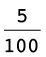 we can write 5%. The symbol % means
exactly the same as .
In question
1(a) you calculated  or 1% of R12 800, and in question
1(b) you
or 1% of R12 800, and in question
1(b) you
calculated  or 8% of R12 800.
or 8% of R12 800.
The amount that a dealer
pays for an article is called the cost price. The
price marked on the article is called the marked price
and the price of the article after discount is the selling
price.
2. The marked prices of
some articles are given below. A discount of 15% is offered to
customers who pay cash. In each case calculate how much a
customer who pays cash will actually pay.
(a) R850 (b) R140
(c) R32 600 (d) R138
Lina bought a couch at a sale. It
was marked R3 500 but she paid only R2 800.
She was
given a discount of R700.
What percentage discount
was given to Lina?
This question means:
How many hundredths of the marked price were taken off?
To answer the
question we need to know how much  (one hundredth) of the marked price
is.
(one hundredth) of the marked price
is.
3. (a) How much is
 of R3 500?
of R3 500?
(b) How many hundredths of R3 500 is the
same as R700?
(c) What percentage discount was given to
Lisa: 10% or 20%?
4. The cost price, marked price
and selling price of some articles are listed below.
Article A: Cost price = R240,
marked price = R360, selling price = R324.
Article B: Cost price = R540,
marked price = R700, selling price = R560.
Article C: Cost price = R1 200,
marked price = R2 000, selling price = R1 700.
The profit is the difference
between the cost price and the selling price.
For each of the above articles,
calculate the percentage discount and profit.
5. Remey decided to work
from home and bought herself a sewing machine for R750. She
planned to make 40 covers for scatter cushions. The fabric and
other items she needed cost her R3 600. Remey planned to sell
the covers at R150 each.
(a) How much profit could Remey make if she
sold all 40 covers at this price?
(b) Remey managed to sell only 25 of the
covers and decided to sell the rest at R100 each. Calculate her
percentage profit.
6. Zadie bakes and sells
pies to earn some extra income. The cost of the ingredients for
her chicken pies came to about R68. She sold the pies for R60.
Did she make a profit or a loss? Calculate the percentage loss
or profit.
hire purchase
Sometimes you need an item but do not
have enough money to pay the full amount immediately. One
option is to buy the item on hire purchase (HP). You will
have to pay a deposit and sign an agreement in which you
undertake to pay monthly instalments until you have paid the
full amount. Therefore:
HP price = deposit + total of
instalments
The difference between the HP price
and the cash price is the interest that the dealer charges you
for allowing you to pay off the item over a period of time.
1.
Sara buys a flat screen television on hire purchase. The cash
price is R4 199. She has to pay a deposit of R950 and 12
monthly instalments of R360.
(a) Calculate the total HP price.
(b) How much interest does she pay?
2. Susie buys a car on
hire purchase. The car costs R130 000. She pays a 10% deposit
on the cash price and will have to pay monthly instalments of
R4 600 for a period of three years. David buys the same car,
but chooses another option where he has to pay a 35% deposit on
the cash price and monthly instalments of R3 950 for two
years.
(a) Calculate the HP price for both
options.
(b) Calculate the difference between the
total price paid by Susie and by David.
(c) Calculate the interest that Susie and
David have to pay as a percentage of the cash price.
simple interest
When interest
is calculated for a number of years on an amount (i.e. a fixed
deposit) without the interest being added to the amount each
year for the purpose of later interest calculations, it is
referred to as simple interest. If the amount is invested for
part of a year, the time must be written as a fraction of a
year.
1. Interest rates are
normally expressed as percentages. This makes it easier to
compare rates. Express each of the following as a
percentage:
(a) A rate of R5 for every R100
(b) A rate of R7,50 for every R50
(c) A rate of R20 for every R200
(d) A rate of x rands for every
a rands
2.
Annie deposits R8 345 into a savings account at Bonus Bank. The
interest rate is 9% per annum.
Per annum means
"per year".
(a) How much interest will she have earned
at the end of the first year?
(b) Annie decides to leave the deposit of R8
345 with the bank for an indefinite period, and to withdraw
only the interest at the end of every year. How much interest
does she receive over a period of five years?
3. Maxi invested R3 500
at an interest rate of 5% per annum. Her total interest was
R875. For what period did she invest the amount?
4.
Money is invested for 1 year at an interest rate of 8% per
annum. Complete the table of equivalent rates.
|
|
1 000
|
2 500
|
8 000
|
20 000
|
90 000
|
x
|
|
|
|
|
|
|
|
|
5. Interest on overdue
accounts is charged at a rate of 20% per annum. Calculate the
interest due on an account that is 10 days overdue if the
amount owing is R260. (Give your answer to the nearest
cent.)
R260
\times 20% = R52 over 365 days. R52 \times = R1,42
6.
A sum of money invested in the bank at 5% per annum, simple
interest, amounted to R6 250 after 5 years. This final amount
includes the interest. Thuli figured out that the final amount
is (1 + 0,05 \times 5 ) \times amount invested.
(a) Explain Thuli's thinking.
(b) Calculate the
amount that was invested.
Hence
P = = = 5 000
Amount invested: R5 000
COMPOUND INTEREST
When the
interest earned each year is added to the original amount, and
the interest for the following year is calculated on this new
amount, the result is known as compound interest.
Example:
R2 000 is invested at 10% per annum
compound interest:
End of 1st year: Amount = R2 000 +
R200 interest = R2 200
End of 2nd year: Amount = R2 200 +
R220 interest = R2 420
End of 3rd
year: Amount = R2 420 + R242 interest = R2 662
1. An amount of R20 000 is
invested at 5% per annum compound interest.
(a) What is the total value of the
investment after 1 year?
(b) What is the total value of the
investment after 2 years?
(c) What is the total value of the
investment after 3 years?
2. Bonus Bank is offering
an investment scheme over two years at a compound interest rate
of 15% per annum. Mr Pillay wishes to invest R800 in this
way.
(a) How much money will be due to him at the
end of the two-year period?
(b) How much interest will have been earned
during the two years?
3. Andrew and Zinzi are
arguing about interest on money that they have been given for
Christmas. They each received R750. Andrew wants to invest his
money in ABC Building Society for 2 years at a compound
interest rate of 14% per annum, while Zinzi claims that she
will do better at Bonus Bank, earning 15% simple interest per
annum over 2 years. Who is correct?
4. Mr Martin invests R12
750 for 3 years compounded quarterly (i.e. four times a year)
at 5,3%.
(a) How many conversion periods will his
investment have altogether?
(b) How much is his investment worth after 3
years?
A = P(1 + )n = R12 750(1 + )12 = R14 931,71
(c) Calculate the total interest that he
earns on his initial investment.
5. Calculate the interest
generated by an investment (P) of R5 000 at 10%
(r) compound
interest over a period (n) of 3 years.
A is the
final amount. Use the formula A = P(1 +
 )n to calculate the
interest.
)n to calculate the
interest.
exchange rate and
commission
1. (a) Tim bought î‡650 at the
foreign exchange desk at Gatwick Airport in the UK at a rate of
R15,66 per î‡1. The desk also charged 2,5%
commission on the transaction. How much did Tim spend to buy
the pounds?
(b) What was the value of R1 in British
pounds on that day?
2. Mandy wants to order a
book from the internet. The price of the book is $25,86. What
is the price of the book in rands? Take the exchange rate as
R9,95 for $1.
3. Bongani is a car
salesperson. He earns a commission of 3% on the sale of a car
with the value of R220 000. Calculate how much commission he
earned.
In this chapter you will work
with numbers smaller than 0. These numbers are called negative
numbers. They have special properties that make them useful for
specific purposes, for example they enable us to solve an
equation such as x +
20 = 10.
2.1 Which numbers are smaller
than 0? 29
2.2 Adding and subtracting
with integers 30
2.3 Multiplying and dividing
with integers 32
2.4 Powers, roots and word
problems 37

2
Integers
2.1 Which numbers are smaller than 0?
why
people decided to have negative numbers
Numbers such as -7 and
-500, the additive inverses of whole numbers,
are included with all the whole numbers and called
integers.
Fractions can be negative
too, e.g. -  and -3,46.
and -3,46.
The natural numbers are used for
counting, and fractions (rational numbers) are used for
measuring. Why do we also have negative numbers?
When a larger number is subtracted from a
smaller number, the answer may be a negative number: 5
- 12 = -7, and this number is called
negative 7.
One of the most important reasons for inventing
negative numbers was to provide solutions for equations like
these:
|
|
|
|
|
17 + x = 10
|
x = -7
because17 + (-7) = 17 - 7
= 10
|
1.
Adding a negative number is just like subtracting the
corresponding positive number
|
|
5 -
x = 9
|
x = -4
because5 - (-4) = 5 + 4 =
9
|
2.
Subtracting a negative number is just like adding the
corresponding positive number
|
|
20 + 3x = 5
|
x = -5
because3 \times (-5) =
-15
|
3.
The product of a positive number and a negative number
is a negative number
|
properties of integers
1. In each case, state
what number will make the equation true. Also state which of
the properties of integers in the table above, is demonstrated
by the equation.
(a) 20 - x = 50 (b) 50 + x = 20
(c) 20 - 3x = 50 (d) 50 + 3x = 20
2.2 Adding and subtracting with integers
Addition and subtraction of negative
numbers
Examples:
(-5) + (-3) and
(-20) -
(-7)
This is done in the same way as the
addition and subtraction of positive numbers.
(-5) +
(-3) can also be written as
-5 + (-3) or as
-5 + -3
(-5) +
(-3) = -8 and
-20 -
(-7) = -13
This is just like 5 + 3 = 8 and 20
- 7 =13, or R5 + R3 = R8, and R20
- R7 = R13.
Subtraction of a larger number from a smaller
number
Examples: 5
- 9 and 29 - 51
Let us first consider the
following:
5 + (-5) = 0 10 +
(-10) = 0 and 20 + (-20)
= 0
If we subtract 5 from 5, we get 0,
but then we still have to subtract 4:
5 - 9 = 5
- 5 - 4
We know that
-9 = (-4) +
(-5)
= 0 - 4
= -4
Suppose the numbers are larger, e.g.
29 - 51:
29
- 51 = 29 - 29
- 22
How much will be left of the 51,
after you have subtracted 29 from 29 to get 0?
How can we find out? Is it 51
- 29?
Addition of a positive and a negative
number
Examples: 7 +
(-5); 37 + (-45) and
(-13) + 45
The following statement is true if
the unknown number is 5:
20 - (a
certain number) =
15
We also need numbers that will make
sentences like the following true:
20 + (a certain number) =
15
But to go from 20 to 15 you have to
subtract 5.
The number we need to make the sentence
20 + (a certain number) =
15 true must have the following strange property:
If you add this number, it should have
the same effect as subtracting 5.
So mathematicians agreed that the
number called negative 5 will have the property that if you add
it to another number, the effect will be the same as
subtracting the natural number 5.
This means that mathematicians agreed that 20 +
(-5) is equal to 20 -
5.
In other words, instead of adding
negative 5 to a
number, you may subtract 5.
Adding a negative number
has the same effect as subtracting a corresponding natural
number.
For example: 20 +
(-15) = 20 - 15 =
5.
Subtraction of a negative number
We have dealt with cases like
-20 -
(-7) on the previous page.
The following statement:
25 + (a certain number) = 30
is true if the number is 5
We also need a number to make this
statement true:
25 - (a certain
number) = 30
If you subtract this number, it
should have the same effect that adding 5.
It was agreed that 25
- (-5) is equal to 25 +
5
Instead of subtracting the negative
number, you add the corresponding positive number (the additive
inverse).
8 -
(-3) = 8 + 3
= 11
-5
- (-12) =
-5 + 12
= 7
We may say that for each
"positive" number there is a corresponding or opposite negative number. Two
positive and negative numbers that correspond, for example 3
and (-3), are called additive inverses.
Subtraction of a positive number from a
negative number
For example: -7
- 4 actually means (-7)
- 4.
Instead of subtracting a positive
number, you add the corresponding negative number.
-7 - 4 can be seen as
(-7) + (-4) =
-11
calculations with integers
Calculate.
1. -7 + 18 2. 24 -
30 - 7
3. -15 + (-14)
- 9 4. 35 - (-20)
5. 30 - 47 6.
(-12) - (-17)

2.3 Multiplying and dividing with integers
multiplication with
integers
1. Calculate.
(a) -7 +
-7 + -7 +
-7 + -7 +
-7 + -7 +
-7 + -7 +
-7
(b) -10 +
-10 + -10 +
-10 + -10 +
-10 + -10
(c) 10 \times (-7) (d) 7
\times (-10)
2. Say whether you agree
(✓) or
(✗) disagree
with each statement.
(a) 10 \times (-7) = 70
(b) 9 \times (-5) = (-9)
\times 5
(c) (-7) \times 10 = 7
\times (-10) (d) 9 \times
(-5) = -45
(e) (-7) \times 10 = 10
\times (-7) (f) 5 \times
(-9) = 45
Multiplication of integers
is commutative:
(-20)
\times 5 = 5 \times (-20)
the distributive property
1. Calculate each of the
following. Note that brackets are used for two purposes in
these expressions: to indicate that certain operations are to
be done first, and to show the integers.
(a) 20 + (-5)
(b) 4 \times (20 +
(-5)) (c) 4 \times 20 + 4 \times
(-5)
(d) (-5) +
(-20) (e) 4 \times ((-5) +
(-20)) (f) 4 \times
(-5) + 4 \times (-20)
2. If you worked
correctly, your answers for question 1 should be 15; 60; 60;
-25; -100 and
-100. If your answers are different, check
to see where you went wrong and correct your work.
3. Calculate each of the
following where you can.
(a) 20 + (-15)
(b) 4 \times (20 +
(-15)) (c) 4 \times 20 + 4 \times
(-15)
(d) (-15) +
(-20) (e) 4 \times ((-15) +
(-20)) (f) 4 \times
(-15) + 4 \times
(-20)
(g) 10 + (-5)
(h) (-4) \times (10 +
(-5)) (i)
(-4) \times 10 +
((-4) \times
(-5))
4. What property of
integers is demonstrated in your answers for questions 3(a) and
(g)?
Explain your answer.
In question 3(i) you had to multiply
two negative numbers. What was your guess?
We can calculate
(-4) \times (10 +
(-5)) as in (h). It is
(-4) \times 5 = -20
If we want the
distributive property to be true for integers, then
(-4) \times 10 + (-4)
\times (-5) must be equal to
-20.
(-4)
\times 10 + (-4) \times
(-5) = -40 +
(-4) \times (-5)
Then (-4) \times
(-5) must be equal to 20.
5. Calculate:
(a) 10 \times 50 + 10 \times
(-30) (b) 50 + (-30)
(c) 10 \times (50 +
(-30)) (d) (-50) +
(-30)
(e) 10 \times (-50) + 10
\times (-30) (f) 10 \times ((-50) +
(-30))
- • The
product of two positive numbers is a positive number, for
example 5 \times 6 = 30.
- • The
product of a positive number and a negative number is a
negative number, for example 5 \times (-6) = -30.
- • The
product of a negative number and a positive number is a
negative number, for example (-5) \times 6 = -30.
6. (a) Underline the
numerical expression below which you would expect to have the
same answers. Do not do the calculations.
16 \times (53 + 68) 53
\times (16 + 68) 16 \times 53 + 16 \times 68 16 \times 53 +
68
(b) What property of operations is
demonstrated by the fact that two of the above expressions have
the same value?
7. Consider your answers for
question 5.
(a) Does multiplication distribute over
addition in the case of integers?
(b) Illustrate your answer with two
examples.
8. Underline the
numerical expression below which you would expect to have the
same answers. Do not do the calculations now.
10 \times ((-50)
- (-30)) 10 \times (-50)
- (-30) 10 \times (-50)
- 10 \times (-30)
9. Do the three sets of
calculations given in question 8.
10. Calculate
(-10) \times (5 +
(-3)).
11. Now consider the
question whether multiplication by a negative number
distributes over addition and subtraction of integers. For
example, would (-10) \times 5 +
(-10) \times (-3) also
have the answer -20, like
(-10) \times (5 +
(-3))?
To make sure that multiplication
distributes over addition and subtraction in the system of
integers, we have to agree that
(a negative number) \times (a negative
number) is a positive number,
for example (-10)
\times (-3) = 30.
12. Calculate each of the
following.
(a) (-20) \times
(-6) (b) (-20) \times
7
(c) (-30) \times
(-10) + (-30) \times
(-8) (d) (-30) \times
((-10) +
(-8))
(e) (-30) \times
(-10) -
(-30) \times (-8) (f)
(-30) \times ((-10)
- (-8))
Here is a
summary of the properties of integers that make it possible to
do calculations with integers:
- • When a
number is added to its additive inverse, the result is 0.
For example, (+12) + (-12) = 0.
- • Adding
an integer has the same effect as subtracting its additive
inverse. For example, 3 + (-10) can be
calculated by doing 3 - 10, and the
answer is -7.
- •
Subtracting an integer has the same effect as adding its
additive inverse. For example, 3 -
(-10) can be calculated by calculating 3
+ 10 is 13.
- • The
product of a positive and a negative integer is negative.
For example, (-15) \times 6 =
-90.
- • The
product of a negative and a negative integer is positive.
For example (-15) \times
(-6) = 90.
division with integers
1. Calculate
(a) 5 \times (-7) (b)
(-3) \times 20
(c) (-5) \times
(-10) (d) (-3) \times
(-20)
2. Use your answers in question 1
to determine the following:
(a) (-35) \div 5 (b)
(-35) \div (-7)
(c) (-60) \div 20 (d)
(-60) \div (-3)
(e) 50 \div (-5) (f) 50 \div
(-10)
(g) 60 \div (-20) (h) 60 \div
(-3)
- • The
quotient of a positive number and a negative number is a
negative number.
- • The
quotient of two negative numbers is a positive number.
mixed calculations
with integers
1. Calculate.
(a) 20(-50 + 7) (b) 20 \times
(-50) + 20 \times 7
(c) 20(-50 + -7)
(d) 20 \times (-50) + 20 \times
-7
(e) -20(-50 +
-7) (f) -20 \times -50 +
-20 \times -7
2. Calculate.
(a) 40 \times (-12 + 8)
-10 \times (2 + -8) - 3
\times (-3 - 8)
(b) (9 + 10 - 9) \times 40 +
(25 - 30 - 5) \times 7
(c) -50(40 - 25 +
20) + 30(-10 + 7 + 13) -
40(-16 + 15 - 2)
(d) -4 \times (30
- 50) + 7 \times (40 - 70)
- 10 \times (60 - 100)
(e) -3 \times (-14
- 6 + 5) \times (-13 - 7
+ 10) \times (20 - 10 - 15)

2.4 Powers, roots and word problems
Answer all questions in this section
without using a
calculator.
1. Complete
the tables.
|
(a)
|
x
|
1
|
2
|
3
|
4
|
5
|
6
|
7
|
8
|
9
|
10
|
11
|
12
|
|
x2
|
|
|
|
|
|
|
|
|
|
|
|
|
|
x3
|
|
|
|
|
|
|
|
|
|
|
|
|
|
(b)
|
x
|
-1
|
-2
|
-3
|
-4
|
-5
|
-6
|
-7
|
-8
|
-9
|
-10
|
-11
|
-12
|
|
x2
|
|
|
|
|
|
|
|
|
|
|
|
|
|
x3
|
|
|
|
|
|
|
|
|
|
|
|
|
The symbol
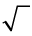 means that you must take
the positive square root of the
number.
Both 10 and (-10) are
called square
roots of 100.
2. Calculate the following:
(a)  -
-  (b) + (- )
(b) + (- )
(c) -(32) (d)
(-3)2
(e) 42 - 62 + 12 (f) 33 - 43 - 23 - 13
(g)  -
-  \times
\times  (h) -(42)(-1)2
(h) -(42)(-1)2
= 9 - 2
\times 5 or -9 -
(-2) \times 5
(i) 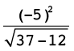 (j) 
=  =
= 
3. Determine the answer to each
of the following:
(a) The overnight temperature in Polokwane
drops from 11 °C to -2 °C.
By how many degrees has the temperature dropped?
(b) The temperature in Estcourt drops from 2
°C to -1 °C in one hour, and
then another two degrees in the next hour. How many degrees in
total did the temperature drop over the two hours?
(c) A submarine is 75 m below the surface of
the sea. It then rises by 21 m. How far below the surface is it
now?
(d) A submarine is 37 m below the surface of
the sea. It then sinks a further 15 m. How far below the
surface is it now?
This chapter is mainly
revision of the work on fractions that you have done in
previous grades. It is being repeated because it is vital that
you are confident working with fractions. Ensure that you
complete all your solutions to questions without using a calculator, and
that you show all steps of your working.
3.1 Equivalent fractions
41
3.2 Adding and subtracting
fractions 45
3.3 Multiplying and dividing
fractions 48
3.4 Equivalent forms 55

3
Fractions
3.1 Equivalent fractions
the same number in
different forms
1. How much money is each of the
following amounts?
(a) of R200 (b)  of R200 (c)
of R200 (c)  of R200
of R200
Did you notice that all the answers
are the same? That is because  ,
,  and 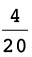 are equivalent fractions. They are
different ways of writing the same number.
and 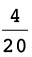 are equivalent fractions. They are
different ways of writing the same number.
Consider this bar. It is divided into
five equal parts.

Each piece is one fifth of the
whole bar.
2. Draw lines on the bar below so
that it is approximately divided into ten equal parts.
(a) What part of the whole bar
is each of your ten parts?
(b) How many tenths is the
same as one fifth?
(c) How many tenths is the
same as two fifths?
(d) How many fifths is the
same as eight tenths?
3. Draw lines on the bar below so
that it is approximately divided into 25 equal parts.

(a) How many twenty-fifths is
the same as two fifths?
(b) How many fifths is the
same as 20 twenty-fifths?
In question 3(b) you found that
 is equivalent to 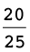: these are just two different ways
is equivalent to 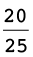: these are just two different ways
to describe the same part of the
bar.
This can be expressed by writing
 =
=  which means that and
which means that and  are equivalent to
are equivalent to
each other.
4. Write down all the
other pairs of equivalent fractions which you found while doing
questions 2 and 3.
The yellow bar is divided into
fifths.

5. (a) Into what kind of
fraction parts is the blue bar divided?
(b) Into what kind of fraction
parts is the red bar divided?
(c) If you want to mark the
yellow bar in twentieths like the blue bar, into how many parts
do you have to divide each of the fifths?
(d) If you want to mark the
yellow bar in fortieths like the red bar, into how many parts
do you have to divide each of the fifths?
(e) If you want to mark the
yellow bar in eightieths, into how many parts do you
have to divide each of the fifths?
(f) If you want to mark the
blue bar in eightieths, into how many parts do you have
to divide each of the twentieths?
6. Suppose this bar is divided
into 4 equal parts, in other words, quarters.

(a) If the bar is also divided
into 20 equal parts, how many of these smaller parts will there
be in each quarter?
(b) If each quarter is divided
into 6 equal parts, what part of the whole bar will each small
part be?
7.
Complete this table of equivalent fractions, as far as you can
using whole numbers. All the fractions in each column must be
equivalent.
|
sixteenths
|
8
|
4
|
2
|
10
|
14
|
12
|
|
eighths
|
|
|
|
|
|
|
|
quarters
|
|
|
|
|
|
|
|
twelfths
|
|
|
|
|
|
|
|
twentieths
|
|
|
|
|
|
|
Equivalent fractions can be formed by
multiplying the numerator and denominator by
the same number. For example
 =
=  = 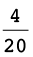
= 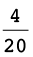
8. Write down five different
fractions that are equivalent to  .
.
There are many
equivalent fractions. Some examples are:
9. Express each of the following
numbers as twelfths:
(a)  (b)
(b) 
(c)  (d)
(d)
You may divide the
numerator and denominator by the same number, instead of
multiplying the numerator and denominator by the same number.
This gives you a simpler fraction.
the fraction
 is
is  by dividing both the numerator
by dividing both the numerator
and denominator by the
common factor of 4.
10. Convert each of the following
fractions to their simplest form:
(a)  (b)
(b) 
(c)  (d)
(d) 
(e)  (f)
(f) 
=

=

Converting between mixed numbers
and fractions
Numbers that have both
whole number and fraction parts are called mixed
numbers.
Examples of mixed numbers: 3  , 2
, 2  , and 8
, and 8 
Mixed numbers can be
written in expanded notation, for example:
3  means 3 +
means 3 +  2
2  means 2 +
means 2 +  8
8  means 8 +
means 8 +  .
.
To add and subtract mixed numbers,
you can work with the whole number parts and the fraction parts
separately, for example:
3
 + 13
+ 13  13
13  - 3
- 3  (we need to "borrow" a unit from 13,
(we need to "borrow" a unit from 13,
= 16
= 12  - 3
- 3  because we cannot subtract
because we cannot subtract
 from
from  )
)
= 17
 = 9
= 9 
However, this method can be difficult
to do with some examples - and it does not
work with multiplication and division.
An alternative and preferred method is to
convert the mixed number to an improper fraction, as
shown in the example below:
NOTE
You can obtain the numerator of
19 in one stepby multiplying the denominator (5) by the whole
number (3), and then adding the numerator (4).
3 
= 3 + 
=  +
+ 
= 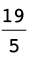
So you can calculate 3
 + 13
+ 13  using this method:
using this method:
3  + 13
+ 13 
=  + 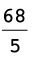
+ 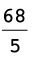
=  The answer must be converted to a
mixed
The answer must be converted to a
mixed
number again:  = 17
= 17 
1. Convert each of the following
mixed numbers to improper fractions:
(a) 5  (b) 2
(b) 2 
(c) 3 (d) 4 
2. Convert each of the following
improper fractions to mixed numbers:
(a)  (b)
(b) 
6

3

(c)  (d)
(d) 

3.2 Adding and subtracting fractions
To add or subtract two fractions,
they have to be expressed with the same denominators
first. To achieve that, one or more of the given fractions may
have to be replaced with equivalent fractions.
|
 + + 
=
 + +  to get twentieths. to get twentieths.
=
 + + 
= 
|
 + + 
=
 + + 
=
+ 
=
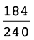
= 
|
We will later refer to this
method of adding or subtracting fractions as Method
A.
|
In the case of  +
+  , multiplying by 20 and by 12 was a sure
way of making
, multiplying by 20 and by 12 was a sure
way of making
equivalent fractions of the same
kind, in this case two-hundred-and-fortieths. However, the
numbers became quite big. Just imagine how big the numbers will
become if you
use the same method to calculate
 +
+  !
!
Fortunately, there is a method of
keeping the numbers smaller (in many cases), when making
equivalent fractions so that fractions can be added or
subtracted. In this method you first calculate the lowest
common multiple or LCM of the
denominators. In the case of
 +
+  , the smaller multiples of the
denominators are:
, the smaller multiples of the
denominators are:
12: 12 24 36 48 60 72 84
20: 20 40 60 80 100 120 140
The smallest number that is a
multiple of both 12 and 20 is 60.
Both  and
and  can be expressed in terms of
sixtieths:
can be expressed in terms of
sixtieths:
 =
=  =
=  because to make twelfths into sixtieths
you have to divide each
because to make twelfths into sixtieths
you have to divide each
twelfth into 5 equal parts, to get 12
\times 5 = 60 equal parts, i.e. sixtieths.
Similarly,  =
=  =
=  .
.
Hence  +
+  =
=  +
+  =
=  =
= 
This method may be called the LCM method of
adding or subtracting fractions.
Adding and subtracting
fractions
1. Which method of adding
and subtracting fractions do you think will be the easiest and
quickest for you, Method A or the LCM method? Explain.
2. Calculate:
(a)  +
+  (b)
(b)  +
+ 
(c) 3  + 2
+ 2  (d) 7 + 3
(d) 7 + 3 
= 7 + 3 +
 +
+ 
= 10

3. Calculate each of the
following:
(a)  -
-  (b)
(b)  -
- 
(c) 5  - 3
- 3  (d) 4
(d) 4  - 5
- 5
= 4
 - 5
- 5 
4. Paulo and Sergio buy a
pizza. Paulo eats  of the pizza and Sergio eats two fifths.
How much of the pizza is left over?
of the pizza and Sergio eats two fifths.
How much of the pizza is left over?
the
pizza.
5. Calculate each of the
following. State whether you use Method A or the LCM
method.
(a)  +
+  (b)
(b)  -
- 
(c) +  (d)
(d)  -
- 
(e) +  (f)
(f)  -
- 
(g)  +
+  +
+  +
+  +
+  +
+  +
+  +
+  +
+  +
+ 
=
3.3 Multiplying and dividing fractions
think about
multiplication and division with fractions
1. Read the questions
below, but do not answer them now. Just describe in each case
what calculations you think must be done to find the answer to
the question. You can think later about how the calculations
may be done.
(a) 10 people come to a party, and each of
them must get  of a pizza. How many pizzas must be
bought to provide for all of them?
of a pizza. How many pizzas must be
bought to provide for all of them?
10
(b)  of the cost of a new clinic must be
carried by the 10 doctors who will work
of the cost of a new clinic must be
carried by the 10 doctors who will work
there. What part of the cost of the clinic
must be carried by each of the doctors, if they have agreed to
share the cost equally?
10
(c) If a whole pizza costs R10, how much
does  of a pizza cost?
of a pizza cost?
R10 \times
(d) The owner of a spaza shop has 10 whole
pizzas. How many portions of  of a pizza each can he make up from the
10 pizzas?
of a pizza each can he make up from the
10 pizzas?
10
2. Look at the different sets of
calculations shown on the next page.
(a) Which set of calculations is a correct
way to find the answer for question 1(a)?
(b) Which set of calculations is a correct
way to find the answer for question 1(b)?
(c) Which set of calculations is a correct
way to find the answer for question
1(c)?
(d) Which set of calculations is a correct
way to find the answer for question 1(d)?
Set A:  \times
\times  =
=  Set B:
Set B:  =
=  . 50 eightieths \div 10 =
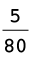
. 50 eightieths \div 10 =
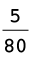
Set C: How many eighths in 10
wholes? 80 eighths. How many 5-eighths in 80? 80 \div 5 =
16
Set D:  is 5 eighths. 10 \times 5 eighths =
is 5 eighths. 10 \times 5 eighths =
 Set E:
Set E:  \div 10 =
\div 10 =  \times
\times  =
= 
Multiply a fraction by a whole number
Example:
8 \times  = 8 \times 3 fifths = 24 fifths =
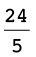 = 4
= 8 \times 3 fifths = 24 fifths =
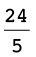 = 4
Divide a fraction by a whole number
You can divide a fraction by
converting it to an equivalent fraction with a numerator that
is a multiple of the divisor.
Example:
 \div 5 = 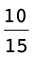 \div 5 = 10 fifteenths \div 5 = 2
fifteenths =
\div 5 = 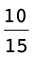 \div 5 = 10 fifteenths \div 5 = 2
fifteenths = 
A fraction of a whole number, and a fraction
of a fraction
Examples:
A  of R36.
of R36.
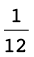 of R36 is the same as R36 \div 12 = R3,
so  of R36 is 7 \times R3 = R21
of R36 is 7 \times R3 = R21
B  of 36 fiftieths.
of 36 fiftieths.
 of 36 fiftieths is the same as 36
fiftieths \div 12 = 3 fiftieths,
of 36 fiftieths is the same as 36
fiftieths \div 12 = 3 fiftieths,
so  of 36 fiftieths is 7 \times 3 fiftieths =
21 fiftieths.
of 36 fiftieths is 7 \times 3 fiftieths =
21 fiftieths.
 \times
\times  means
means  of
of  , it is the same.
, it is the same.
 of
of  is the same as
is the same as  \div 12 =
\div 12 =  , so
, so  of
of  is 7 \times
is 7 \times  =
=  .
.
3. (a) You calculated  \times
\times  in the example above. What was the
answer?
in the example above. What was the
answer?
(b) Calculate
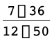, and simplify your answer.
=
Example:
 \times
\times  =
=  of
of  =
=  of
of  =
=  =
= 
The same answer is
obtained by calculating 
To multiply two fractions, you may simply
multiply the numerators and the denominators.
 \times
\times  =
=  =
=  =
= 
Division by a fraction
When we divide
by a fraction, we have a very different situation. Think about
this:
If you have 40
pizzas, how many learners can have a pizza each?
To find the
number of fifths in 40 pizzas: 40 \times 5 = 200 fifths of a
pizza.
To find the number of
3-fifths: 200 \div 3 = 66 portions of  pizza and 2 fifths of a pizza left
over.
pizza and 2 fifths of a pizza left
over.
Since the portion for
each learner is 3 fifths, the 2 fifths of a pizza that remains
is 2 thirds of a portion.
So, to calculate 40 \div
 , we multiplied by 5 and
divided by 3, and that gave us 66 and 2 thirds of a
portion.
, we multiplied by 5 and
divided by 3, and that gave us 66 and 2 thirds of a
portion.
In fact, we calculated 40 \times
 .
.
Division is the inverse of
multiplication.
So, to divide by a
fraction, you multiply by its inverse.
Example:
 \div
\div  =
=  \times
\times  =
=  =
= 
Multiplying and dividing
fractions
1. Calculate each of the
following:
(a)  of
of  (b)
(b)  \times
\times 
(c)  of
of  (d)
(d)  \times 1
\times 1 
=

=

(e)  \times
\times  (f)
(f)  of
of 
2. A small factory
manufactures copper pans for cooking. Exactly  kg of copper is needed to make one
pan.
kg of copper is needed to make one
pan.
(a) How many pans can they make if
 kg of copper is available?
kg of copper is available?
6
pans.
(b) How many pans can they make if
 kg of copper is available?
kg of copper is available?
ns. They
can only make whole pans, so they can
make 6
pans withg of copper.
(c) How many pans can they make if
 kg of copper is available?
kg of copper is available?
of
copper
left
over.
(d) How many pans can
they make if  kg of copper is available?
kg of copper is available?
.
(e) How many pans can
be made if kg of copper is available?
pans.
(f) How many pans can be made if 5 kg of
copper is available?
g of copper is left
over.
3.
Calculate:
(a)  \div
\div  (b)
(b)  \div
\div 
=
 \times
\times  = 6
= 6
(c)  \div
\div  (d) 2
(d) 2  \div
\div 
=
 \times
\times  = 48
= 48
(e) 2 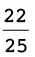 \div  (f) \div
(f) \div 
(g) 20 \div  (h) 2 \div
(h) 2 \div 
(i) 1 \div  (j)
(j)  \div
\div 
4. A rectangle is 3
 cm long and 2
cm long and 2  cm wide.
cm wide.
(a) What is the area of this rectangle?
A
= l \times b2
(b) What is the perimeter of this
rectangle?
P
= 2(l + b) = m
5. A
rectangle is 5  cm long and its area is 8
cm long and its area is 8
 cm2.
cm2.
How wide is this rectangle?
8
6. Calculate.
(a) 2 of 5  (b) 3 \times 2
(b) 3 \times 2 
(c) 8  \div 3
\div 3  (d) 3
(d) 3  \times 3
\times 3 
(e) 2  \div 5 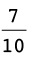 (f)
\div 5 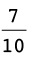 (f)  \times 1
\times 1  \times 1
\times 1 
7. Calculate:
(a)  (
(  + 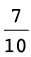) (b)
+ 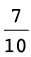) (b)  \times
\times  +
+  \times
\times 
(c)  (
(  - ) (d)
- ) (d)  \times
\times  -
-  \times
\times 
8. A piece of land with
an area of 40 ha is divided into 30 equal plots. The total
price of the land is R45 000. Remember that "ha" is the
abbreviation for hectares.
(a) Jim buys  of the land.
of the land.
(i) How many plots is this and how much
should he pay?
12
plots.
8
000
(ii) What is the area of the land that Jim
buys?
16
ha
(b) Charlene buys  of the land. How many plots is this and
how much should she pay?
of the land. How many plots is this and
how much should she pay?
10
plots.
15 000
(c) Bongani buys the rest of the land.
Determine the fraction of the land that he buys.

squares, cubes, square roots and
cube roots
1. Calculate:
(a)  \times
\times  (b) 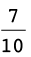 \times
(b) 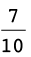 \times 
=

=

(c) 2  \times 2
\times 2  (d) 1
(d) 1  \times 1
\times 1 
(e) 3  \times 3
\times 3  (f) 10
(f) 10  \times 10
\times 10 
 is the square of
is the square of  , because
, because  \times =
\times =  .
.  is the square root of
is the square root of  .
.
2. Find the square root of each
of the following numbers.
(a)  (b) 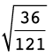
(b) 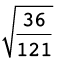
=

=

(c)  (d)
(d)
=
 = 1
= 1 
3. Calculate.
(a)  \times
\times  \times
\times  (b)
(b)  \times
\times  \times
\times 
=

=

(c)  \times
\times  \times
\times  (d)
(d)  \times
\times  \times
\times 
=

=

4. Find the cube root of each of
the following numbers.
(a)  (b)
(b) 
=

=

(c)  (d)
(d) 
=
=  = 2
= 2 

3.4 Equivalent forms
Fractions, decimals
and percentage forms
1. The rectangle on the
right is divided into small parts.
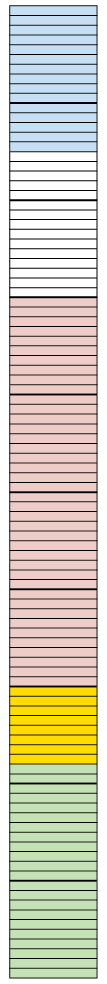
(a) How many of these small
parts are there in the rectangle?
(b) How many of these small parts are there
in one tenth of the rectangle?
(c) What fraction of the rectangle is
blue?
(d) What fraction of the rectangle is
pink?
Instead of "6 hundredths" we may say
"6 per cent" or, in short, "6%". It means the same thing.15
per cent of the rectangle on the right is blue.
2. (a) What percentage of the rectangle is
green?
(b) What percentage of the rectangle is
pink?
0,37 and 37% and
 are different ways of writing
are different ways of writing
the same value (37
hundredths).
3. Express each of the
following in three ways: as a decimal; a percentage and a
fraction (in simplest form):
(a) 3 tenths (b) 7 hundredths
0,3; 30%;

(c) 37 hundredths (d) 7 tenths
0,37; 37%;

0,7; 70%;

(e) 2 fifths (f) 7 twentieths
0,4; 40%;

0,35; 35%;

4. Fill in the missing values in
the table:
5. (a) Jannie eats a quarter of a
watermelon. What percentage of the watermelon is this?
(b) Sibu drinks 75% of the milk in a bottle.
What fraction of the milk in the bottle has he drunk?
(c) Jem used 0,18 of the paint in a tin. If
he uses half of the remaining amount the next time he paints,
what fraction (in simplest form) is left over?
(1 - 0,18) \div 2 =
0,41
In this chapter you will do
more work with fractions written in the decimal notation. When
fractions are written in the decimal notation, calculations can
be done in the same way than for whole numbers. It is important
to always keep in mind that the common fraction form, the
decimal form and the percentage form are just different ways to
represent exactly the same numbers. These numbers are called
the rational numbers.
4.1 Equivalent forms 59
4.2 Calculations with decimals
61
4.3 Solving problems 64
4.4 More problems 66
4.5 Decimals in algebraic
expressions 68
4
The decimal notation for fractions
4.1 Equivalent forms
Decimal fractions and common
fractions are simply different ways of expressing the same
number. They are different notations showing the same
value.
Notation means a set of
symbols to show a special thing.
To write a decimal
fraction as a common fraction:
To write a common
fraction as a decimal fraction:
Common fractions, decimal
fractions and percentages
You are not permitted to use a
calculator in this exercise.
1. Write the following decimal
fractions as common fractions in their simplest form:
(a) 0,56 (b) 3,87
=

(c) 1,9 (d) 5,205
=
 or 1
or 1 
2. Write the following common
fractions as decimal fractions:
(a)  (b)
(b) 
(c)  (d) 2
(d) 2 
=
\times  =
=  = 2,375
= 2,375
3. Write the following
percentages as common fractions in their simplest form:
(a) 70% (b) 5% (c) 12,5%
4. Write the following decimal
fractions as percentages:
(a) 0,6 (b) 0,43 (c) 0,08
=
 = 43%
= 43%
=
 = 8%
= 8%
(d) 0,265 (e) 0,005
5. Write the following common
fractions as percentages:
(a)  (b)
(b)  (c)
(c) 
(d)  (e) (f)
(e) (f)
6. Jane and Devi are in
different schools. At Jane's school the year mark for
Mathematics was out of 80, and Jane got 60 out of 80. At Devi's
school the year mark was out of 50 and Devi got 40 out of
50.
(a) What fraction of the total marks, in
simplest form, did Devi obtain at her school?
 =
= 
(b) What percentage did Devi and Jane get
for Mathematics?
Devi:
80% Jane:  =
=  \times
\times  =
=  = 75%
= 75%
(c) Who performed better, Jane or Devi?
7. During a basketball
game, Lebo tried to score twelve times. Only four of her
attempts were successful.
(a) What fraction of her attempts was
successful?
 =
= 
(b) What percentage of her attempts was not
successful?
 =
=  = 66,6…%
= 66,6…%

4.2 Calculations with decimals
When you add and
subtract decimal fractions:
Add tenths to tenths.
Subtract tenths from
tenths.
Add hundredths to
hundredths.
Subtract hundreds from
hundredths.
And so on!
When you multiply
decimal fractions, you change the decimals to whole numbers,
do the calculation and last, change them back to decimal
fractions.
For example: To
calculate 13,1 \times 1,01, you first calculate 131 \times
101 (which equals 13 231). Then, since you have multiplied
the 13,1 by 10, and the 1,01 by 100 in order to turn them
into whole numbers, you need to divide this answer by 10
\times 100 (i.e. 1 000). Thus, the final answer is 13,231
When you divide
decimal fractions, you can use equivalent fractions to help
you.
For example: 21,7
\div 0,7 = 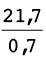 =  \times
\times  =
=  = 31
= 31
Notice how you multiply
both the numerator and denominator of the fraction by the
same number (in this case, 10). Always multiply by the
smallest power of ten that will convert both
values to whole numbers.
CALCULATIONS WITH DECIMALS
You are not
permitted to use a calculator in this exercise. Ensure that you
show all steps of your working.
1. Calculate the value of the
following:
(a) 3,3 + 4,83 (b) 0,6 + 18,3 + 4,4
(c) 9,3 + 7,6 - 1,23 (d)
(16,0 -
7,6) - 0,6
(e) 9,43 - (3,61 + 1,14)
(f) 1,21 + 2,5 - (2,3 -
0,23)
2. Calculate the value of the
following:
(a) 4 \times 0,5 (b) 15 \times
0,02 (c) 0,8 \times 0,04
(d) 0,02 \times 0,15 (e) 1,07
\times 0,2 (f) 0,016 \times 0,02
3. Calculate the value of the
following:
(a) 7,2 \div 3 (b) 12 \div 0,3 (c)
0,15 \div 0,5
(d) 10 \div 0,002 (e) 0,3 \div
0,006 (f) 0,024 \div 0,08
4. Circle the value that is equal
to or closest to the answer to each calculation:
(a) 3 \times 0,5 (b) 4,4 \div
0,2
A: 6 A: 8,8
B: 1,5 B: 2,2
C: 0,15 C: 22
(c) 56 \times 1,675
A: more than 56
B: more than 84
C: more than 112
5. Determine the operator
and the unknown numbers in the following diagram, and fill them
in:

6. Calculate the following:
(a) (0,1)2 (b) (0,03)2 (c) (2,5)2
(d) (e) 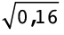 (f) 
(g) (0,2)3 (h) (0,4)3 (i) (0,03)3
(j)  (k)
(k)  (l)
(l) 
7. Calculate the following:
(a) 2,5 \times 2 \div 10 (b) 4,2
- 5 \times 1,2
(c) 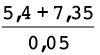 (d) 4,2 \div 0,21 + 0,45 \times 0,3
=
 \times
\times 

4.3 Solving problems
All kinds of
problems
You are not
permitted to use a calculator in this exercise. Ensure that you
show all steps of working.
1. Is 6,54 \times 0,81 = 0,654
\times 8,1? Explain your answer.
2. You are given that 45 \times
24 = 1 080. Use this result to determine:
(a) 4,5 \times 2,4 (b) 4,5 \times
24 (c) 4,5 \times 0,24
(d) 0,045 \times 24 (e) 0,045
\times 0,024 (f) 0,045 \times 24
3. Without actually
dividing, choose which answer in brackets is the correct
answer, or the closest to the correct answer
(a) 14 \div 0,5 (7; 28; 70) (b) 0,58 \div
0,7 (8; 80; 0,8)
(c) 2,1 \div 0,023 (10; 100; 5)
4. (a) John is asked to calculate 6,5 \div
0,02. He does the following:
Step 1: 6,5 \div 2 = 3,25
Step 2: 3,25 \times 100 = 325
Is he correct? Why?
\times
= 650 \div 2 = 325
(b) Use John's method in part (a) to
calculate:
(i) 4,8 \div 0,3 (ii) 21 \div 0,003
5. Given: 0,174 \div 0,3
= 0,58. Using this fact, write down the answers for the
following without doing any further calculations:
(a) 0,3 \times 0,58 (b) 1,74 \div 3
(c) 17,4 \div 30 (d) 174 \div 300
(e) 0,0174 \div 0,03 (f) 0,3 \times 5,8
4.4 More problems
More problems and
calculations
You may use a
calculator for this exercise.
1. Calculate the following,
rounding off all answers correct to 2 decimal places:
(a) 8,567 + 3,0456 (b) 2,781
- 6,0049
(c) 1,234 \times 4,056 (d) 
2. What is the difference between
0,890 and 0,581?
3. If a rectangle is 12,34 cm
wide and 31,67 cm long.
(a) What is the perimeter of the
rectangle?
(b) What is the area of the rectangle? Round
off your answer to two decimal places.
4. Alison buys a
cooldrink for R5,95, a chocolate for R3,25 and a packet of
chips for R4,60. She pays with a R20 note.
(a) How much did she spend?
(b) How much change did she get?
5. A tractor uses 11,25
â„“ of fuel in 0,75 hours. How many litres
does it use in one hour?
6. Mrs Ruka received her
municipal bill.
(a) Her water consumption charge for one
month is R32,65. The first 5,326 kâ„“ are
free, then she pays R5,83 per kilolitre for every kilolitre
thereafter.
How much water did the Ruka household
use?
(b) The electricity charge for Mrs Ruka for
the same month was R417,59. The first 10 kWh are free. For the
next 100 kWh the charge is R1,13 per kWh, and thereafter for
each kWh the charge is R1,42.
How much electricity did the Ruka household
use?
7. A roll of material is
25 m long. To make one dress, you need 1,35 m of material. How
many dresses can be made out of a roll of material and how much
material is left over?
8. If 1 litre of petrol weighs
0,679 kg, what will 28,6 â„“ of petrol
weigh?
9. The reading on a water
meter at the beginning of the month is 321,573
kâ„“. At the end of the month the reading is
332,523 kâ„“. How much water was used during
this month, in â„“?
4.5 Decimals in algebraic expressions and equations
DECIMALS IN
ALGEBRA
1. Simplify the following:
(a) (b) 7,2x3 -
10,4x3
(c) (2,4x2y3)(10y3x) (d)
11,75x2
- 1,2x \times 5x
(e)  (f)
(f)  +
+ 
=

=

(g) 3x2 + 0,1x2 - 45,6 +
3,9 (h) 
=

=

2. Simplify the following:
(a)  (b)
(b)  -
-
=
 = 25x6
= 25x6
(c)  \times
\times  (d)
(d)  \div
\div 
=

=

3. Solve the following
equations:
(a) 0,24 + x = 0,31 (b) x +
5,61 = 7,23
(c) x - 3,14 =
9,87 (d) 4,21 - x = 2,74
(e) 0,96x = 0,48 (f) x \div
0,03 = 1,5

You are not permitted to use a
calculator in this exercise, except for question 5. Ensure that
you show all steps of working, where relevant.
1. Complete the following table:
|
Percentage
|
Common
fraction
|
Decimal fraction
|
|
2,5%
|
|
|
|

|
|
|

|
0,009
|
2. Calculate
the following:
(a)
6,78 - 4,92 (b) 1,7 \times 0,05 (c) 7,2 \div
0,36
(d) 4,2 -
0,4 \times 1,2 + 7,37 (e) (0,12)2 (f)
=

=
 = 2
= 2
3. 36 \times 19
= 684. Use this result to determine:
(a)
3,6 \times 1,9 (b) 0,036 \times 0,19 (c) 68,4 \div 0,19
4.
Simplify:
(a)
(4,95x
- 1,2) -
(3,65x + 3,1) (b)

=
4,95x
- 1,2 -
3,65x
-3,1
=

5. Mulalo went to the shop and
purchased 2 tubes of toothpaste for R6,98 each; 3 cans of
cooldrink for R6,48 each, and 5 tins of baked beans for R7,95
each. If he pays with a R100 note, how much change should he
get?
100 - 2
\times 6,98 - 3 \times 6,48
- 5 \times 7,95 = R26,85
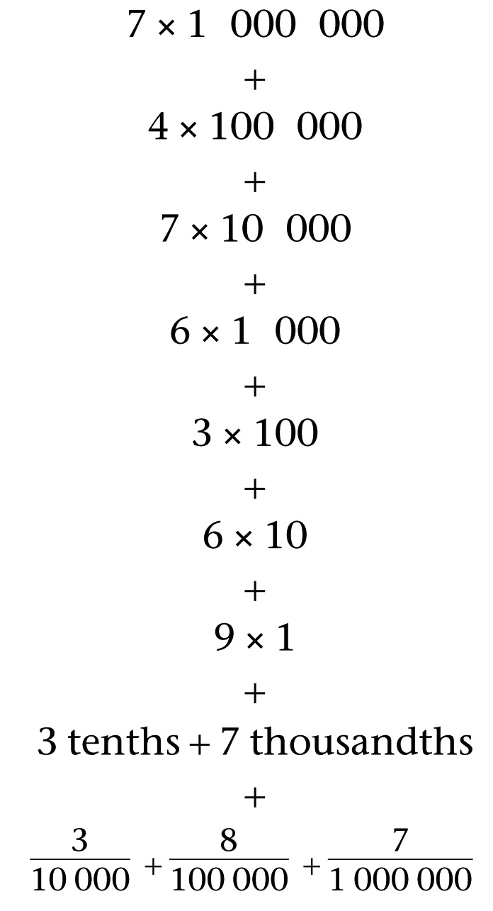
In this chapter, you will
revise work on exponents that you have done in previous grades.
You will extend the laws of exponents to include exponents that
are negative numbers.
You will also solve simple
equations in exponential form.
In Grade 8 you learnt about
scientific notation. In this chapter we will extend the
scientific notation to include very small numbers such as
0,0000123.
5.1 Revision 73
5.2 Integer exponents 77
5.3 Solving simple exponential
equations 80
5.4 Scientific notation 82
5
Exponents
5.1 Revision
Remember that exponents are a
shorthand way of writing repeated multiplication of the same
number by itself. For example: 5 \times 5 \times 5 =
53. The
exponent, which is 3 in this example, stands for however
many times the value is being multiplied. The number that is
being multiplied, which is 5 in this example, is called
thebase.
If there are mixed operations, then the powers
should be calculated before multi-plication and division. For
example: 52 \times
32 = 25 \times
9.
You learnt these laws for working with
exponents in previous grades:
|
|
|
|
am \times
an = am +n
|
32 \times 33 = 32 + 3 = 35
|
|
am \div
an = am -
n
|
54 \div 52 = 54 -
2 = 52
|
|
(am)n =
am \times n
|
(23)2 = 22 \times 3 =
26
|
|
(a \times
t)n = an \times
tn
|
(3 \times 4)2 = 32 \times 42
|
|
a0 = 1
|
320 = 1
|
the exponential form of a
number
1. Write the following in
exponential notation:
(a) 2 \times 2 \times 2 \times 2
\times 2 (b) s \times s \times s \times
s (c) (-6) \times
(-6) \times (-6)
(d) 2\times 2 \times 2
\times 2 \times s \times s
\times s \times s (e) 3
\times 3 \times 3 \times 7 \times 7 (f) 500 \times (1,02)
\times (1,02)
2. Write each of the numbers in
exponential notation in some different ways if possible:
(a) 81 (b) 125 (c) 1 000
(d) 64 (e) 216 (f) 1 024
order of operations
1. Calculate the value of
72
- 4.
Bathabile did the calculation
like this: 72
- 4 = 14 - 4 = 10
Nathaniel did the calculation
differently: 72
- 4 = 49 - 4 = 45
Which
learner did the calculation correctly? Give reasons for your
answer.
2.
Calculate: 5 + 3 \times 22 - 10, with
explanations.
3. Explain
how to calculate 26
- 62.
4. Explain how to calculate (4 +
1)2 + 8 \times

laws of exponents
1. Use the laws of exponents to
calculate the following:
(a) 22 \times 24 (b) 34 \div 32 (c) 30 + 34
(d) (23)2 (e) (2 \times 5)2 (f) (22 \times 7)3
2. Complete the table.
Substitute the given number for y. The first column has
been done as an example.
|
y
|
2
|
3
|
4
|
5
|
|
(a)
|
y \times
y4
|
2 \times 24
= 21+ 4
= 25
= 32
|
|
|
|
|
(b)
|
y2 \times
y3
|
22 \times 23
= 22 + 3
= 4 \times 8
= 32
|
|
|
|
|
(c)
|
y5
|
25 = 32
|
|
|
|
3. Are the expressions y
\times y4;
y2 \times
y3 and
y5
equivalent? Explain.
y \times
y4 =
y1 + 4 =
y5; and
y2 \times
y3 =
y2 + 3 =
y5
4. Complete the table. Substitute
the given number for y.
|
y
|
2
|
3
|
4
|
5
|
|
(a)
|
y4
\div y2
|
24 \div 22
= 16 \div 4
= 4
|
|
|
|
|
(b)
|
y3
\div y1
|
23 \div 21
= 8 \div 2
= 4
|
|
|
|
|
(c)
|
y2
|
22 = 4
|
|
|
|
5. (a) From the table, is
y4 \div
y2 =
y3 \div
y1 =
y2? Explain
why.
y4 \div
y2 =
y4
-
2 =
y2; and
y3 \div
y1 =
y3
-
1 =
y2
(b) Evaluate y4 \div y2 for y = 15.
y4 \div y2 = y2. So the value of
y4 \div
y2 when
y = 15 is y2 = (15)2 = 225
6. Complete the table:
|
x
|
2
|
3
|
4
|
5
|
|
(a)
|
2
\times 5x
|
2 \times 52
= 2 \times 25
= 50
|
|
|
|
|
(b)
|
(2
\times 5)x
|
(2 \times 5)2
= 102
= 100
|
|
|
|
|
(c)
|
2x \times 5x
|
22 \times 52
= 4 \times 25
= 100
|
|
|
|
7. (a) From the table above, is 2 \times
5x = (2
\times 5)x? Explain.
(b) Which expressions in question 6 are
equivalent? Explain.
8. Below is a calculation
that Wilson did as homework. Mark each problem correct or
incorrect and explain the mistakes.
(a) b3 \times b8 = b24
(b) (5x)2 = 5x2
(c) (-6a) \times (-6a) \times
(-6a) = (-6a)3

5.2 Integer exponents
54 means 5 \times 5 \times 5
\times 5. The exponent 4 indicates the number of appearances of
the repeated factor.
What may a negative exponent mean, for example
what may 5-4
mean?
Mathematicians have decided to use negative
exponents to indicate repetition of the multiplicative
inverse of the base, for example 5-4 is used to indicate
 \times
\times  \times
\times  \times
\times  or (
or (  ) 4, and
x-3 is used to indicate (
) 4, and
x-3 is used to indicate (
 ) 3 which is
) 3 which is
 \times \times
\times \times  .
.
This decision was not
taken blindly - mathematicians were well
aware that it makes good sense to use negative exponents in
this meaning. One major advantage is that the negative
exponents, when used in this meaning, have the same properties
as positive exponents, for example:
2-3 \times 2-4 = 2(-3) + (-4) = 2-7 because 2-3 \times 2-4 means (  \times
\times  \times
\times  ) \times (
) \times (  \times
\times  \times
\times  \times
\times  ) which is (
) which is (  )7.
)7.
2-3 \times 24 = 2(-3) + 4 = 21 because 2-3 \times 24 means (  \times
\times  \times
\times  ) \times (2 \times 2 \times 2 \times
2) which is 2.
) \times (2 \times 2 \times 2 \times
2) which is 2.
Negative exponents
1. Express each of the
following in the exponential notation in two ways: with
positive exponents and with negative exponents.
(a)  \times
\times
 \times
\times
 \times
\times
 \times
\times
 \times
\times
 (b)
(b)  \times
\times  \times
\times  \times
\times 
= (
 )6 and 5-6
)6 and 5-6
= (
 )4 and 3-4
)4 and 3-4
2. In each case, check
whether the statement is true or false. If it is false, write a
correct statement. If it is true, give reasons why you say
so.
(a) 10-3 = 0,001 (b) 3-5 \times 92 = 3
False,
3-5
92 =
 =
= 
(c) 252 \times 10-6 \times 26 = 5 (d) (
 )-4 = 54
)-4 = 54
False,
54 \times
2-6 \times
5-6 \times
26 =
5-2

True,
 is the multiplicative
inverse of 5
is the multiplicative
inverse of 5
3. Calculate each of the
following without using a calculator:
(a) 10-3 \times 204 (b) (  )-4
)-4
4. (a) Use a scientific calculator to
determine the decimal values of the given powers.
Example: To find
3-1 on your
calculator, use the key sequence: 3 yx
1 ± =
|
|
2-1
|
5-1
|
(-2)-1
|
(0,3)-1
|
0-1
|
10-1
|
10-2
|
|
|
|
|
|
|
|
|
|
(b) Explain the meaning of 10-3.
This
means or 0,001.
5. Determine the value of each of
the following in two ways:
A. By using the definition of powers (For
example, 52 \times
50 = 25 \times 1 =
25.)
B. By using the properties of exponents (For
example, 52 \times
50 = 52 + 0 = 52 = 25.)
(a) (33)-2 (b)
42 \times
4-2 (c)
5-2 \times
5-1
= 
= 
= 
= 
= 
= 
= 
6.
Calculate the value of each of the following. Express
your answers as common fractions.
(a) 2-3 (b)
32 \times
3-2 (c) (2 +
3)-2
= 
= 32 \times 
=  =
= 
(d) 3-2 \times
2-3 (e)
2-3 +
3-3 (f)
10-3
= 
= 
(g) 23 + 2-3 (h)
(3-1)-1
(i) (2-3)2
= 8 + 
= 8 + 
7. Which of the following are
true? Correct any false statement.
(a) 6-1 =
-6 (b) 3x-2 =
 (c) 3-1x-2
=
(c) 3-1x-2
=
False. 6-1 =

False. 3x-2 =

(d)
(ab)-2 =
 (e)
(e)  =
=  (f) = 3
(f) = 3
True. (ab)-2 =

True.  =
= 
True.  = (3-1)-1
= (3-1)-1
=  \div
\div 
=  \times
\times 
=  =
=

5.3 Solving simple exponential equations
An exponential equation is an
equation in which the variable is in the exponent. So when you
solve exponential equations, you are solving questions of the
form "To what power must the base be raised for the
statement to be true?"
To solve this kind of equation, remember
that:
If am = an, then
m = n.
In other words, if the base is the same on
either side of the equation, then the exponents are the
same.
Example:
3x = 243
3x = 35 (rewrite using the same
base)
x = 5 (since the bases are the same, we
equate the exponents)
Some exponential equations are
slightly more complex:
Example: 3x
+ 3 = 243
3x + 3 = 35 (rewrite using the same
base)
x + 3 = 5 (equate the
exponents)
x = 2
Check: LHS
32 + 3 =
35 = 243
Remember that the exponent can also
be negative. However, you follow the same method to solve these
kinds of equations.
Example:
2x = 
2x = 2-5
(rewrite using the same base)
x = -5 (equate the
exponents)
Solving exponential
equations
1. Use the table to answer questions that
follow:
|
x
|
2
|
3
|
4
|
5
|
|
2x
|
4
|
8
|
16
|
32
|
|
3x
|
9
|
27
|
81
|
243
|
|
5x
|
25
|
125
|
625
|
3 125
|
For which value of x is:
(a) 2x = 32 (b) 3x =
81 (c) 5x = 3 125
(d) 2x = 8 (e) 5x =
625 (f) 3x = 9
(g) 5x + 1 = 25 (h) 3x
+ 2 = 27 (i)
2x - 1 = 8
2. Solve these exponential
equations. You may use your calculator if necessary.
(a)
4x =  (b) 62x = 1 296 (c) 2x
-
1 =
(b) 62x = 1 296 (c) 2x
-
1 =
(d)
3x+ 2 =
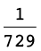 (e) 5x + 1 = 15 625 (f)
2x + 3 =

(g)
4x + 3 =
 (h) 32 - x
= 81 (i) 53x
= 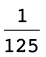
(h) 32 - x
= 81 (i) 53x
= 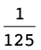

5.4 Scientific notation
Scientific notation is a way of
writing numbers that are too big or too small to be written
clearly in decimal form. The diameter of a hydrogen atom, for
example, is a very small number. It is 0,000000053 mm. The
distance from the sun to the earth is, on average, 150 000 000
km.
In scientific notation the diameter of the
hydrogen molecule is written as 5,3 \times 10-8 and the
distance from the sun to the earth as 1,5 \times 10
8. It is easier to
compare and to calculate numbers like these, as it is very
cumbersome to count the zeros when you work with these
numbers.
Look at more examples
below:
|
|
|
|
6 130 000
|
6,13 \times
106
|
|
0,00001234
|
1,234 \times
10-5
|
Anumber written in
scientific notation is written as the product of two numbers,
in the form ± a \times
10n where a is a decimal number between 1 and
10, and n is an integer.
Any number can be written in
scientific notation, for example:
40 = 4,0 \times 10
2 = 2 \times 100
The decimal number 324 000
000 is written as 3,24 \times 10 8 in scientific notation,
because the decimal comma is moved 8 places to the left to
form 3,24.
The decimal number
0,00000065 written in scientific notation is 6,5 \times
10-7,
because the decimal point is moved 7 places to the right to
form the number 6,5.
writing very small and very
large numbers
1. Express the following numbers
in scientific notation:
(a) 134,56 (b) 0,0000005678
(c) 876 500 000 (d) 0,0000000000321
(e) 0,006789 (f) 89 100 000 000 000
(g) 0,001 (h) 100
2. Express the following numbers
in ordinary decimal notation:
(a) 1,234 \times 106 (b) 5 \times 10-1
(c) 4,5 \times 105 (d) 6,543 \times
10-11
3. Why do we say that 34
\times 103 is not
written in scientific notation? Rewrite it in scientific
notation.
4. Is each of these
numbers written in scientific notation? If not, rewrite it so
that it is in scientific notation.
(a) 90,3 \times 10-5 (b) 100
\times 102 (c) 1,36
\times 105
(d) 2,01 \times 10-2 (e) 0,01
\times 103 (f) 0,6
\times 108
calculations using scientific
notation
Example: 123 000 \times 4 560
000
= 1,23 \times 105 \times 4,56 \times
106 (write in
scientific notation)
= 1,23 \times 4,56 \times
105 \times
106 (multiplication
is commutative)
= 5,6088 \times 1011 (Use a calculator to
multiply the decimals, but add the powers mentally.)
1. Use scientific
notation to calculate each of the following. Give the answer in
scientific notation.
(a) 135 000 \times 246 000 000 (b) 987 654
\times 123 456
(c) 0,000065 \times 0,000216 (d) 0,000000639
\times 0,0000587
Example: 5 \times
103 + 4 \times
104
= 0,5 \times 104 + 4 \times 104 (Form like terms)
= 4,5 \times 104 (Combine like terms)
2. Calculate the following. Leave the answer
in scientific notation.
(a) 7,16 \times 105 + 2,3 \times 103 (b) 2,3 \times 10-4 + 6,5
\times 10-3
(c) 4,31 \times 107 + 1,57 \times 106 (d) 6,13 \times
10-10
+ 3,89 \times 10-8
In this chapter you will learn
about different kinds of number patterns. Some number patterns
are found within geometric patterns. You will learn to identify
how patterns are formed, and to make your own patterns. You
will learn to make formulae that can be used to describe number
patterns.
6.1 Geometric patterns 87
6.2 More patterns 91
6.3 Different kinds of
patterns in sequences 93
6.4 Formulae for sequences
96
6Patterns
6.1 Geometric patterns
investigating and
extending

1. Blue and yellow square tiles
are combined to form the above arrangements.
(a) How many yellow tiles are there in each
arrangement?
(b) How many blue tiles are there in each
arrangement?
(c) If more arrangements are made in the
same way, how many blue tiles and how many yellow tiles will
there be in arrangement 5? Check your answer by drawing the
arrangement on the grid on the right.
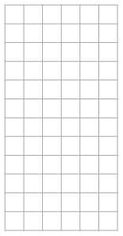
(d) Complete this table.
(e) How many blue tiles will there be in a
similar arrangement with 26 yellow tiles?
(f) How many blue tiles will there be in a
similar arrangement with 100 yellow tiles?
206
(g) Describe how you thought to produce your
answer for (f)?
2. (a) In these arrangements there are red
tiles too. Complete this table.

|
|
1
|
2
|
3
|
4
|
5
|
6
|
7
|
|
|
4
|
6
|
8
|
10
|
12
|
14
|
16
|
|
|
4
|
4
|
4
|
4
|
4
|
4
|
4
|
(b) How many red tiles are there in each
arrangement?
(c) How many yellow tiles are there in each
arrangement?
The number of red tiles in
arrangements like those in question 2 is constant. It
is always 4, no matter how many blue and yellow tiles there
are.
3. Is the number of yellow tiles
in the above arrangements a constant or is it a variable?
4. Look at these three
arrangements. They consist of black squares, grey squares and
white squares.
(a) Draw another arrangement of the same
kind, but with a different length, on the grid provided on the
right.
(b) Describe what is constant in these
arrangements.
(c) What are the variables in these
arrangements?
The smallest arrangement above may be
called arrangement 1, the next bigger one may be called
arrangement 2, and so on.
5. (a) Complete the table for arrangements
like those in question 4.
|
|
1
|
2
|
3
|
4
|
5
|
6
|
7
|
10
|
20
|
|
|
4
|
4
|
4
|
4
|
4
|
4
|
4
|
4
|
4
|
|
|
4
|
8
|
12
|
16
|
20
|
24
|
28
|
40
|
80
|
|
|
1
|
4
|
9
|
16
|
25
|
36
|
49
|
100
|
400
|
(b) How many grey squares do you think there
will be in arrangement 15? Explain your answer.
(c) How many black squares do you think
there will be in arrangement 15? Explain your answer.
(d) How many white squares do you think
there will be in arrangement 15? Explain your answer.
The numbers of grey squares in the
different arrangements in question 4 form a pattern:
4; 8; 12; 16; 20; 24; . . . , and so
on.
The numbers of white squares in the different
arrangements also form a pattern:
1; 4; 9; 16; 25; 36; 49; . . . , and
so on.
6. What are the next five numbers
in each of the above patterns?
7. (a) Draw the next arrangement that
follows the same pattern.
(b) How many black tiles are there in the
arrangement you have drawn?
(c) How many black tiles will there be in
each of the next four arrangements?
|
DO SOMETHING
MORE
|
|
|
|
Consider the arrangements
in question 4 again. If there are 20 grey tiles in such
an arrangement, how many white tiles are there? Enter
your answer in the table below. Also complete the
table.
|
6.2 More patterns
drawing and
investigating
1. (a) Make two more
arrangements of black and grey squares so that a pattern
is formed.

(b) Is there a constant in your pattern? If
yes, what is its value?
(c) Is there a variable in your pattern? If
yes, give the values of the variable.
2. (a) Make three more arrangements with
dots to form the sequence 1; 3; 6; 10; 15 . .
.
(b) How many dots will there be in the sixth
and seventh arrangements? Explain how you got your answer.
(c) How many dots are
there in arrangements 1 and 2 together?
(d) How many dots are
there in arrangements 2 and 3 together?
(e) How many dots are
there in arrangements 3 and 4 together?
(f) How many dots are
there in arrangements 4 and 5 together?
(g) Describe the pattern in your answers for
(c), (d), (e) and (f).
3. (a) Draw two more arrangements to make a
pattern.

(b) What are the variables in your
pattern?
(c) The number of black squares is a
variable in these arrangements. The value of this variable is 4
in the first arrangement and 8 in the second arrangement. What
is the value of this variable in the third arrangement?
(d) What are the values of each of the
variables in the fifth arrangement in your pattern? Explain
your answers.
4. (a) Now make a pattern of your own.

(b) Use this table to describe the variables
in your pattern, and their values.
6.3 Different kinds of patterns in sequences
do the same thing
repeatedly
1. (a) Write the next three numbers in each
of the sequences below.
Sequence A: 5 9 13 17 21
Sequence B: 5 10 20 40 80
Sequence C: 5 10 17 26 37
(b) Describe the differences in the ways in
which the three sequences are formed.
2. You will now make a
sequence with the first term 5.
The numbers in a sequence are
also called the terms of the sequence.
Write 5 on the left on
the line below. Then add 8 to the first term (5) to form the
second term of your sequence. Write the second term next to the
first term (5) in the line below. Now add 8 to the second term
to form the third term. Continue like this to form ten more
terms.
Asequence can be formed by
repeatedly adding or subtracting the same number. In this
case the difference between consecutive terms in a
sequence is constant.
To write more terms of sequence
B in question 1(a), you multiplied by 2
repeatedly.
To write more terms of sequence
A in question 1(a), you added 4 repeatedly.
To write more terms of sequence
C in question 1(a) you did not add the same number each time,
nor did you multiply by the same number.
3. Write the next three
terms of each sequence. In each case also describe what the
pattern is, for example "there is a constant difference of -5
between consecutive terms".
(a) 100; 92; 84; 76;
(b) 1; 4; 9; 16;
(c) 2; 8; 18; 32;
(d) 3; 6; 11; 18;
(e) 640; 320; 160;
(f) 1; 2; 4; 7; 11;
4. In each case, follow the
instruction to make a sequence with eight terms.
(a) Start with 1 and multiply by 2
repeatedly.
(b) Start with 256 and subtract 32
repeatedly.
(c) Start with 256 and divide by 2
repeatedly.
The sequence that you made in
question 2 can be represented with a table, as shown below.
|
|
1
|
2
|
3
|
4
|
5
|
6
|
7
|
8
|
9
|
10
|
|
|
5
|
13
|
21
|
29
|
37
|
45
|
53
|
61
|
69
|
77
|
5. In each case make a
sequence by following the instructions. Write the term numbers
and the term values in the given table.
(a) Term 1 = 10. Add 15 repeatedly.
(b) Term 1 = 10. Term value = 15 \times term
number - 5.
(c) Term 1 = 10. Multiply by 2
repeatedly.
(d) Term 1 = 20. Term value = 10 \times
2term number
(e) Term 1 = 10. Term value = 10 \times
2term number -
1
(f) Term 4 = 30. Add 5
repeatedly.
6. Instructions for
forming a sequence are given in two different ways in question
5. How would you describe the two different ways for giving
instructions to form a sequence?
6.4 Formulae for sequences
The formula for
a number sequence can be written in two different ways:
- • A
description of the relationship between consecutive
terms. In other words the calculations that you do to a
term to produce the next term, as in questions 5(a), (c)
and (f) on the previous page. The first (or another) term
must be given. This kind of formula has two parts, the
first term, and the relationship between terms.
- • A
description of the relationship between the value of the
term and its position in the sequence. This
relationship describes the calculations that can be done
on the term number to produce the term value,
as in question 5(b), (d) and (e) on the previous page.
make two formulae for the same
sequence
1. Choose any whole number
smaller than 10 as the first term of a sequence.
(a) Use your chosen first term to form a
sequence by adding 5 repeatedly.
(b) Multiply each term number below by 5 to
form a sequence:
(c) What is similar about the two sequences
you have formed?
(d) Now fill in your own sequence in the
same table:
(e) What must you add to or subtract from
each term value in (b) to get the same sequence as the one you
made in (a)?
(f) Fill in the
following to write a formula for each sequence:
For the sequence in
(b): Term value =
(term number)
For the sequence in (a): Term value =
(term
number)
2. Now you are going to
repeat what you did in question 1, with a different set of
sequences.
In this sequence, the
term number is multiplied by 3 to get the term value.
|
|
1
|
2
|
3
|
4
|
5
|
6
|
7
|
8
|
|
|
3
|
6
|
9
|
12
|
15
|
18
|
21
|
24
|
Now make a formula describing the
relationship of the term
value to the term
number for each of these sequences:
(a) The sequence that starts with 8 and is
formed by adding 3 repeatedly.
(b) The sequence that starts with 12 and is
formed by adding 3 repeatedly.
(c) The sequence that starts with 2 and is
formed by adding 3 repeatedly.
3. Write the first eight
terms of each of the following sequences, and in each case
describe how each term can be calculated from the previous
term.
(a) Term value = 10 \times term number +
5
(b) Term value = 5
\times term number - 3
4. For each sequence,
write a formula to obtain each term from the previous term, and
also try to write formula which relates each term to its
position in the sequence. Check both your formulae by applying
them, and write the results in the table.
(a) 7 11 15 19 23 27 31 35 39 43
A. Relationship between
consecutive terms:
B. Relationship between term
value and its position in sequence:
(b) 60 57 54 51 48 45 42 39 36
A. Relationship between
consecutive terms:
B. Relationship between term
value and its position in sequence:
(c) 1 2 4 8 16 32 64 128
A. Relationship between
consecutive terms:
B. Relationship between term
value and its position in sequence:

In this chapter you will work
with relationships between sets of numbers called input numbers
and output numbers. You will find the output numbers that
correspond to given input numbers, and the other way round. You
will use rules to calculate the output numbers, and you will
solve equations to find the input numbers. The rules to
calculate the output numbers can be given in words (verbally),
as flow diagrams or as formulae.
7.1 Find output numbers for
given input numbers 101
7.2 Different ways to
represent the same relationship 103
7.3 Different representations
of the same relationship 107
7
Functions and relationships
7.1 Find output numbers for given input numbers
two different sets
of input numbers
In this activity you will do some
calculations with:
Set A: the natural numbers smaller
than 10: the numbers 1, 2, 3, 4, 5, 6, 7, 8 and 9.
Set B: multiples of 10 that are
bigger than 10 but smaller than 100: the numbers 20, 30, 40,
50, 60, 70, 80 and 90.
1. You are going to choose a
number, multiply it by 5, and subtract the answer from 50.
(a) Choose any number from set A and do the
above calculations.
(b) Choose any number from set B and do the
above calculations.
(c) If you choose any other number from set
B, do you think the answer will also be a negative number?
2. (a) Write down all the different output
numbers that will be obtained when the calculations 50
- 5x are performed on the different
numbers in set A.
Output numbers are
numbers that you obtain when you apply the rule to the input
numbers.
(b) Write down the output numbers that will
be obtained when the formula 50 - 5x
is applied to set B.
3. (a) Complete the following table for set
A:
|
Input numbers
|
1
|
2
|
3
|
4
|
5
|
6
|
7
|
8
|
9
|
|
Values of 50
- 5x
|
|
|
|
|
|
|
|
|
|
(b) Complete the following table for set
B:
|
Input numbers
|
20
|
30
|
40
|
50
|
60
|
70
|
80
|
90
|
|
Values of 50
- 5x
|
|
|
|
|
|
|
|
|
4. In this question your set of
input numbers will be the even numbers 2; 4; 6; 8; 10; ...
(a) What will all the output numbers be if
the rule 2n + 1 is applied to the set of even numbers?
Write a list.
(b) What will the output numbers be if the
rule 2n - 1 is applied?
(c) What will the output numbers be if the
rule 2n + 5 is applied?
(d) What will the output numbers be if the
rule 3n + 1 is applied?
5. (a) What kind of output numbers will be
obtained by applying the rule x - 1
000 to natural numbers smaller than 1 000?
(b) What kind of output numbers will be
obtained by applying the rule 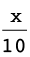 + 10 to natural numbers smaller than
10?
The
output numbers will all be fractions with the whole number 10,
e.g. 10,
10, and
so on.
(c) If you use the rule 30x + 2, and
use input numbers that are positive fractions with denominators
2, 3 and 5, what kind of output numbers will you obtain?
7.2 Different ways to represent the same relationship
Consider the work that you did in
Section 6.4 of Chapter 6. In each question, there were
twovariable quantities.
A quantity that changes is
called a variable quantity or just a
variable.
If one variable quantity is
influenced by another, we say there is a relationship
between the two variables. You can sometimes work out which
number is linked to a specific value of the other
variable.
An algebraic expression such as
10x + 5 describes what calculations must be done to find
the output number that corresponds to a given input number.
The output number can also be
called the output value, or the value of the expression,
which is 10x + 5 in this
case.
For any input number, application of the rule
10x + 5 produces only one output number, and it is very
clear what that number is. For instance if the formula is
applied to x = 3, the output number is 35.
Arelationship between two
variables in which there is only one output number for each
input number, is called a function.
Functions can be represented in
different ways:
- • With a
table that shows some values of the two variables. A table
shows clearly which value of the output variable
corresponds to each particular value of the input
variable.
- • A flow
diagram, which shows what calculations are to be done to
calculate the output number that corresponds to a given
input variable.
- • A
formula, which also describes what calculations are to be
done to calculate the output number that corresponds to a
given input variable.
- • A
graph.
Examples of
these four ways of describing a function are given on the next
two pages.
1. Complete the flow diagram:

A completed flow diagram shows two
kinds of information:
- • It
shows what calculations are done to produce the output
numbers.
- • It
shows which output number is connected to which input
number.
The flow diagram that you have
completed shows the following information:
- • Each input
number is multiplied by 5, then 20 is added, to produce the
output numbers.
- • Which
output numbers correspond to which input numbers.
The calculations that need to be done
can also be described with an expression. The expression
5x + 20 describes what calculations you did in question
1. One may also write this as a formula:
The output numbers of a
function are also called function values. Hence the
formula can also be written as
function value = 5x + 20
A verbal formula:
output number = 5 \times input number
+ 20
An algebraic formula:
output number = 5x + 20
2. Complete this table for the
function described by 5x + 20:
|
Input numbers
|
-1
|
-2
|
-3
|
-4
|
-5
|
|
Function values
|
|
|
|
|
|
3. Draw a graph of this function
on the next page.
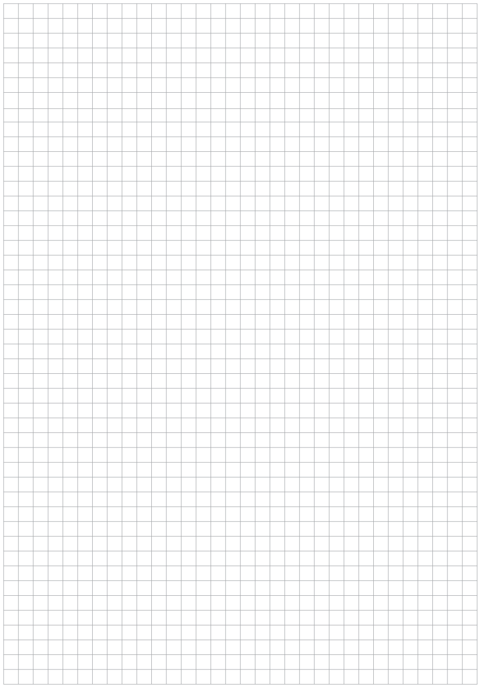
4. A graph of a certain function
is given below. Complete the table for this function.
|
Input numbers
|
|
|
|
|
|
|
Function values
|
|
|
|
|
|

7.3 Different representations of the same relationship
Do this work on the following pages.
There is a page for each question.
Represent each of the following
functions with
(a) a flow diagram
(b) a table of values for the set of
integers from -5 to 5
(c) a graph
1. The relationship described by
the expression 3x + 4
2. The relationship described by
the expression 2x - 5
3. The relationship described by
the expression  x + 2
x + 2
4. The relationship described by
the expression -3x + 4
5. The relationship described by
the expression 2,5x + 1,5
6. The relationship described by
the expression 0,2x + 1,4
7. The
relationship described by the expression
-2x - 4
1.

2.


3.
4.
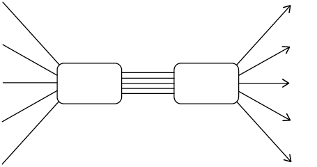

5.


6.

7.


An algebraic expression is a
description of a set of operations that are to be done in a
certain order. In this chapter, you will learn to specify a
different set of operations that will produce the same results
as a given set of operations. Two different expressions that
produce the same results are called equivalent expressions.
8.1 Algebraic language 117
8.2 Properties of operations
124
8.3 Combining like terms in
algebraic expressions 127
8.4 Multiplication of
algebraic expressions 131
8.5 Dividing polynomials by
integers and monomials 135
8.6 Products and squares of
binomials 139
8.7 Substitution into
algebraic expressions 142

8
Algebraic expressions
8.1 Algebraic language
words, diagrams and
expressions
1. Complete this
table.
|
|
|
|
|
Multiply a number by 5
and then subtract 3 from the answer.
|

|
5x - 3
|
|
(a)
|
Add 5 to a number and
then multiply the answer by 3.
|
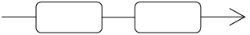
|
|
|
(b)
|
|

|
|
|
(c)
|
|
|
3(2x + 3)
|
An algebraic
expression indicates a sequence of operations that
can also be described in words. In some cases they can be
described with flow diagrams.
Expressions in brackets should always
be calculated first. If there are no brackets in an algebraic
expression, it means that multiplication and division must be
done first, and addition and subtraction afterwards.
For example, if x = 5 the expression 12
+ 3x means "multiply 5 by 3, then add 12". It does
not mean "add 12 and 3, then multiply by 5".
If you wish to say "add 12 and 3, then multiply
by 5", the numerical expression should be 5 \times (12 + 3) or
(12 + 3) \times 5.
2. Describe each of these
sequences of calculations with an algebraic expression:
(a) Multiply a number by 10, subtract 5 from
the answer, and multiply the answer by 3.
(b) Subtract 5 from a number, multiply the
answer by 10, and multiply this answer by 3.
3. Evaluate each of these
expressions for x = 10:
(a) 200 - 5x (b) (200 -
5)x
200 - 5 \times 10 = 200
- 50 = 150
(c) 5x + 40 (d) 5(x + 40)
5 \times (10 + 40) = 5
\times 50 = 250
(e) 40 + 5x (f) 5x + 5 \times
40
5 \times 10 + 5 \times
40 = 50 + 200 = 250
some words we use in
algebra
An expression with one term only,
like 3x2, is
a monomial.
An expression which is a sum of two
terms, like 5x + 4, is called a binomial.
An expression which is a sum of three
terms, like 3x3 + 2x + 9, is called a
trinomial.
The symbol x is often used to represent
the variable in an algebraic expression, but other
letter symbols may also be used.
In the monomial 3x2, the 3 is called the
coefficient of x2.
In the binomial 5x + 4, and the
trinomial 3x2 + 2x + 9 the numbers 4
and 9 are called constants.
1. Complete the table, using the
completed first row as an example.
|
|
|
|
|
|
|
x2 + 6x + 10
|
Trinomial
|
x
|
10
|
the second term is 6
|
|
6s3 +
s2 +
5
|
|
|
|
s2 is
|
|
+ 12
|
|
|
|
the first term is

|
|
4p10
|
|
|
|
p10 is
|
2. Consider the
pattern-polynomial starting with 7x5 + 5x4 + 3x3 + x2 + ...
(a) What is the coefficient of
the fourth term?
(b) What is the exponent value
of the fifth term?
(c) Do you think the sixth term will be a
constant? Why?
equivalent algebraic
expressions
1. Calculate the
numerical value of the expressions for the various values of
x. Do the
calculations in your exercise book. Then fill in your
answers.
|
x
|
-2
|
-1
|
0
|
1
|
2
|
|
(a)
|
3x + 2
|
|
|
|
|
|
|
(b)
|
2x - 3
|
|
|
|
|
|
|
(c)
|
3x + 2 + 2x
- 3
|
|
|
|
|
|
|
(d)
|
2x - 3 + 3x
+ 2
|
|
|
|
|
|
|
(e)
|
5x - 1
|
|
|
|
|
|
|
(f)
|
(3x + 2)(2x
- 3)
|
|
|
|
|
|
|
(g)
|
3x(2x - 3)
+ 2(2x - 3)
|
|
|
|
|
|
|
(h)
|
6x2 - 5x - 6
|
|
|
|
|
|
|
(i)
|

|
|
|
|
|
|
|
(j)
|

|
|
|
|
|
|
2. Make a list of all the
algebraic expressions above which have the same numerical value
for the same value of x, although they may look
different:
2x - 3
Equivalent
expressions are algebraic expressions that have different
sequences of operations, but have the same numerical value
for any given value of x.
It is often convenient not
to work with a given expression, but to replace it
with an equivalent expression.
3. Complete this table.
|
x
|
2
|
3
|
5
|
10
|
-5
|
-10
|
|
12x - 7 +
3x + 10 - 5x
|
|
|
|
|
|
|
4. Complete this table.
|
x
|
2
|
3
|
5
|
10
|
-5
|
-10
|
|
10x + 3
|
|
|
|
|
|
|
5. (a) Is 10x + 3 equivalent to
12x - 7 + 3x + 10 - 5x?
Explain your answer.
(b)
Suppose you need to know how much 12x - 7 + 3x +
10 - 5x is for x = 37 and
x = -43. What do you think is the
easiest way to find out?
conventions for writing
algebraic expressions
Here are some things that
mathematicians have agreed upon, and it makes mathematical work
much easier if all people stick to these agreements.
A convention is
something that people have agreed to do in the same way.
The multiplication sign is
often omitted in algebraic expressions: We normally write
4x instead of 4 \times x and 4(x
- 5) instead of 4 \times (x
- 5).
1. Rewrite each of the
following in the way in which it is normally written in
algebraic expressions.
(a) x \times 4 + x \times
y - y \times 3 (b) 7 \times
(10 - x) + (5 \times x +
3)10
People all over the world
have agreed that, in expressions that do not contain
brackets, addition and subtraction should be performed as
they appear from left to right in the expression.
According to this convention,
x - y + z means that you first have to
subtract y from x, then add z. For example
if x = 10, y = 5 and z = 3, x - y +
z is 10 - 5 + 3 and it means 10 - 5 = 5, then 5 + 3 = 8.
It does not mean 5 + 3 = 8, then 10 - 8 =
2.
2. Calculate 50 - 20 + 30 and 50
+ 30 - 20 and 50 - 30 + 20
3. Evaluate each of the following
expressions for x = 10, y = 5 and z
= 2.
(a)
x +
y -z
(b) x
-z +y
(c)
10y - 3x + 5z - 4y (d) 10y -
3x -
5z +
4y +
3x
People have also agreed
that, in expressions that do not contain brackets, we should
do multiplication (and division) before addition
and subtraction.
Hence 5 + 3 \times 4 should be
understood as "multiply 4 by 3, then add the answer to 5" and
not as "add 5 and 3 then multiply the answer by 4".
Also, 3 \times 4 + 5 should be understood to
mean "multiply 4 by 3, then add 5 to the answer", and not as
"add 4 and 5 then multiply the answer by 3".
4. Do each of the following
calculations.
(a) multiply 4 by 3, then add 5 to the
answer
(b) add 4 and 5 then multiply the answer by
3
(c) multiply 4 by 3, then add the answer to
5
(d) add 5 and 3 then multiply the answer by
4
5. Rewrite the instructions in
4(a) and 4(c) without using words.
6. Calculate each of the
following.
(a) 10 \times 5 + 30 (b) 30 + 10 \times
5
(c) 10 \times 5 - 30 (d) 30 - 10 \times
5
7. (a) Add 4 and 5, then subtract the answer
from 20.
(b) Subtract 4 from 20 and then add 5.
(c) Add 4 and 5, then multiply the answer by
3.
(d) Multiply 3 by 5 and then add the answer
to 4.
If we want to specify the
calculations in 7(a) and 7(c) without using words we face
challenges.
We cannot write 20 - 4 + 5
for "add 4 and 5 then subtract the answer from 20",
because that would mean "subtract 4 from 20 then add 5".
We need a way to indicate, without using words, that we want
the addition to be performed before the subtraction in this
case.
Similarly we cannot write 4 + 5 \times 3 for
"add 4 and 5 then multiply the answer by 3", because
that would mean "multiply 3 by 5 and then add the answer to
4". We need a way to indicate, without using words, that we
want the addition to be performed before the multiplication in
this case.
Mathematicians have agreed to use brackets to
address the above challenges. The following convention is used
all over the world:
Whenever there are brackets
in an expression, the calculations within the brackets should
be performed first.
Hence 20 - (4 + 5) means add 4 and
5 then subtract the answer from 20, but20 - 4 + 5 means
subtract 4 from 20 then add 5.
(4 + 5) \times 3 or 3 \times (4 + 5) means
add 4 and 5 then multiply the answer by 3, but 4 + 5
\times 3 means multiply 3 by 5 then add the answer to
4.
10 + 2(5 + 9) means add 5 and 9, multiply
the answer by 2, then add this answer to 10: 5 + 9 = 14 14
\times 2 = 28 28 + 10 = 38
8. Calculate each of the
following.
(a) 100 + 50 - 30 (b) 100 + (50 - 30)
(c) 100 - 50 + 30 (d) 100 - (50 + 30)
(e) 3(10 - 4) + 2 (f) 10(5 + 7) + 3(18 -
8)
(g) 250 - 10 \times (18 + 2) + 35 (h) (20 +
20) \times (20 - 10)
(i) (250 - 10) \times (18 + 2) + 35 (j) 20 +
20 \times (20 - 10)
(k) 200 + (100 \times 2(15 + 5)) (l) (200 +
100) \times 2 \times 15 + 5
In algebra, we normally write
3(x + 2y) instead of (x + 2y)
\times 3, and we write 3(x - 2y) instead of
(x - 2y) \times 3. Don't let this conventional
way of writing in algebra confuse you. The expression
3(x + 2y) does not mean that multiplication by 3
is the first thing you should do when you evaluate the
expression for certain values of x and y. The
first thing you should do is to add the values of x and
y. That is what the brackets tell you!
However, performing the instructions 3(x
+ 2y) is not the only way in which you can find out how
much 3(x + 2y) is for any given values of
x and y. Instead of working out 3(x +
2y), you may work out 3x + 6y. In this
case you will multiply each term before you add them
together.
9. Evaluate each of the following
expressions for x = 10, y = 5 and z
= 2.
(a) xy + z (b)
x(y + z)
(c) x + yz (d) xy +
xz
(e) xy - z (f)
x(y - z)
(g) x - yz (h)
xy - yz
(i) x + (y - z) (j)
x - (y - z)
(k) x - (y + z) (l)
x - y - z
(m) x + y - z (n)
x - y + z

8.2 Properties of operations
1. Calculate the following:
(a) 5(3 + 4) (b) 5 \times 3 + 5 \times 4
(c) 6 \times 3 + (4 + 6) (d) (6 + 4) + 3
\times 6
(e) 3 \times (4 \times 5) (f) (3 \times 4)
\times 5
You should have noticed that for each
row the results are the same. This is because operations with
numbers have certain properties, namely the
distributive, commutative and associative
properties.
The distributive property is
used each time you multiply a number in parts. For example:
The word "distribute" means
to spread out. The distributive property may be
described as follows:
a(b + c) = ab + ac
where a, b and c can be any numbers.
We may say: "multiplication distributes
over addition"
The number thirty-four is actually 30 + 4. You
may calculate 5 \times 34 by calculating 5 \times 30 and 5
\times 4, and then adding the two answers:
5 \times 34 = 5 \times 30 + 5 \times
4
2. Calculate each of the
following:
(a) 5(x - y) for x = 10
and y = 8 (b) 5x - 5y for x = 10
and y = 8
(c) 5(x - y) for x =
100 and y = 30 (d) 5x - 5y for x =
100 and y = 30
(e) 5(x - y + z) for
x = 10, y = 3, z = 2 (f) 5x -
5y + 5z for x = 10, y = 3, z
= 2
3. We say "multiplication
distributes over addition".
Does multiplication also
distribute over subtraction?
Give examples to support
your answer.
For any values of x and
y,
- • x +
y and y + x give the same answers,
and
- • xy
and yx give the same answers.
This is called the commutative
property of addition, and multiplication.
4. We say "addition is
commutative" and "multiplication is commutative".
Is subtraction also
commutative? Demonstrate your answer with an example.
The associative property
allows you to arrange three or more numbers in any sequence
when adding or multiplying. For any values of x,
y and z, the following expressions all have the
same answer:
x + y + z
y + x + z z + y +
x
5. Calculate 16 + 33 + 14 + 17 in
the easiest possible way.
The associative property of
multiplication allows you to simplify something like the
following.
abc + bca +
cba
Because the order of multiplication does not
change the result we can rewrite this expression as: abc
+ abc + abc.
This then can be simplified by adding like
terms to be 3abc. You will be able to use these
properties throughout this chapter and when you do algebraic
manipulations.
When you form an expression
that is equivalent to a given expression you say that you
manipulate the
expression.
6. Replace each of the
following expressions with a simpler expression that will give
the same answer. Do not do any calculations now. In each
case state why your replacement will be easier to do.
(a) 17 \times 43 + 17 \times 57
(b) 7 \times 5 \times 8 \times 4 + 12 \times
8 \times 4 \times 7 - 9 \times 4 \times 5 \times 8
(c) 43 \times 17 + 57 \times 17 (d)
43x + 57x (for x = 213 or any other
value)
7. Which properties of operations
did you use in each part of question 6?
8.3 Combining like terms in algebraic expressions
rearrange terms,
then combine like terms
To
check whether two expressions are possibly equivalent, you can
evaluate both expressions for several different values of the
variable.
1. In each case below,
first predict whether the two expressions are equivalent and
then check by evaluating both for x = 1, x = 10, x
= 2 and x =
-2 in the tables.
(a) x(x + 3) and
x2 + 3
(b) x(x + 3) and
x2 +
3x
Some expressions can be simplified by
rearranging the terms and combining "like
terms".
In the expression
5x2
+ 13x + 7 +
2x2
- 8x - 12, the terms
5x2
and 2x2 are like
terms.
Two or more like terms can
be combined to form a single term.
5x2 + 2x2 can be replaced by
7x2 because
for any value of x, for example x = 2 or x
= 10, calculating 5x2 + 2x2 and 7x2 will produce the same output
value (try it!).
2. Complete the table.
|
x
|
10
|
2
|
5
|
1
|
|
5x2 +
2x2
|
|
|
|
|
|
7x2
|
|
|
|
|
|
13x -
8x
|
|
|
|
|
|
5x
|
|
|
|
|
It is difficult to see the like terms
in a long expression like 3x2 + 13x + 7 +
2x2 -
8x - 12. Fortunately, you can rearrange the terms in an
expression so that the like terms are next to each other.
3. (a) Complete the second and third rows of
the table below. You will complete the next two rows when you
do question (g).
|
x
|
10
|
2
|
5
|
1
|
|
3x2 + 13x + 7 +
2x2
- 8x - 12
|
|
|
|
|
|
3x2 +
2x2
+ 13x - 8x + 7 - 12
|
|
|
|
|
|
|
|
|
|
|
|
|
|
|
(b) What do you observe?
(c) How does the one expression in the above
table differ from the other one?
(d) Combine like terms in
3x2 +
2x2 +
13x - 8x + 7 - 12 to make a shorter equivalent
expression.
(e) Evaluate your shorter expression for
x = 10, x = 2 and x = 5.
(f) Is your shorter expression equivalent to
3x2 +
13x + 7 + 2x2 - 8x - 12?
Explain how you know whether it is or is
not.
(g) Evaluate 5x2 + 5x - 5 and
5(x2 +
x - 1) for x = 10, x = 2, x = 5 and
x = 1, and write your answers in the last two rows of
the above table.
4. Simplify each expression:
(a) (3x2 + 5x + 8) +
(5x2 +
x + 4) (b) (7x2 + 3x + 5) +
(2x2 -
x - 2)
(c) (6x2 - 7x - 4) +
(4x2 +
5x + 5) (d) (2x2 - 5x - 9) -
(5x2 -
2x - 1)
(e) (-2x2 + 5x - 3) +
(-3x2 -
9x + 5) (f) (y2 + y + 1) +
(y2 -
y - 1)
5. Complete the table. (Hint:
Save yourself some work by simplifying first!)
|
x
|
2,5
|
3,7
|
6,4
|
12,9
|
35
|
-4,7
|
-0,04
|
|
(3x + 6,5) +
(7x + 3,5)
|
|
|
|
|
|
|
|
|
(13x - 6) + (26 -
12x)
|
|
|
|
|
|
|
|
6. Simplify:
(a) (2r2 + 3r - 5) +
(7r2 -
8r - 12) (b) (2r2 + 3r - 5) -
(7r2 -
8r - 12)
(c) (2x + 5xy + 3y) -
(12x - 2xy - 5y) (d) (2x +
5xy + 3y) + (12x - 2xy -
5y)
7. Evaluate the following
expressions for x = 3, x = -2, x = 5 and
x = -3.
(a) 2x(x2 - x - 1) +
5x(2x2 + 3x - 5) -
3x(x2
+ 2x + 1)
(b) (3x2 - 5x + 7) -
(7x2 +
3x - 5) + (5x2 - 2x + 8)
8. Write equivalent expressions
without brackets.
(a) 3x4 -
(x2 +
2x) (b) 3x4 -
(x2
- 2x)
(c) 3x4 + (x2 -
2x) (d) x - (y +
z - t)
9. Write equivalent
expressions without brackets, rearrange so that like terms are
grouped together, and then combine the like terms.
(a) 2y2 + (y2 - 3y) (b)
3x2 +
(5x + x2)
(c) 6x2 -
(x4 +
3x2) (d)
2t2
- (3t2 -
5t3)
(e) 6x2 + 3x -
(4x2 +
5x) (f) 2r2 - 5r + 7
+ (3r2
- 7r - 8)
(g) 5(x2 + x) +
2(x2 +
3x) (h) 2x(x - 3) +
5x(x + 2)
10. Write equivalent expressions
without brackets and simplify these expressions as far as
possible.
Example 5r2 - 2r(r + 5) =
5r2 -
2r2 -
10r
=
3r2 -
10r
(a) 3x2 + x(x + 3) (b) 5x + x(7 - 2x)
(c) 6r2 - 2r(r - 5) (d) 2a(a + 3) + 5a(a - 2)
(e)
6y(y
+ 1) -
3y(y
+ 2) (f) 4x(2x
- 3)
- 3x(x
+ 2)
(g) 2x2(x - 5)
- x(3x2 - 2) (h)
x(x - 1) +
x(2x + 3) -
2x(3x + 1)
=x2 - x + x3 + 3x - 6x2 - 2x = x3 - 5x2 + 2x

8.4 Multiplication of algebraic expressions
Multiply polynomials
by monomials
1. (a) Calculate 3 \times 38 and 3 \times 62
and add the two answers.
(b) Add 38 and 62, then multiply the answer
by 3.
(c) If you do not get the same answer for
(a) and (b), you have made a mistake. Rework until you get it
right.
The fact that if
you work correctly, you get the same answer in questions 1(a)
and 1(b), is a demonstration of the distributive
property.
The distributive property may
be described as follows:
a(b + c) = ab + ac and
a(b - c) = ab - ac,
where a, b and c can be any numbers.
What you saw in question 1 was that 3
\times 100 = 3 \times 38 + 3 \times 62.
This can also be expressed by writing 3(38 +
62) = 3 \times 38 + 3 \times 62.
2. (a) Calculate 10 \times
56
(b) Calculate 10 \times 16 + 10 \times
40
3. (a) Write down any two numbers smaller
than 100. Let us call them x andy. Add your two
numbers, and multiply the answer by 3.
(b) Calculate 3 \times x and 3 \times
y and add the two answers.
(c) If you do not get the same answers for
(a) and (b) you have made a mistake somewhere. Correct your
work.
4. Complete
the table.
|
x
|
12
|
50
|
5
|
|
y
|
4
|
30
|
10
|
|
5x
- 5y
|
|
|
|
|
5(x -
y)
|
|
|
|
|
5x + 5y
|
|
|
|
|
5(x +
y)
|
|
|
|
Performing the
instructions 5(x + y) is not the only way in
which you can find out how much 5(x + y) is for
any given values of x and y. Instead of doing
5(x + y) you may do 5x + 5y. In
this case you will multiply first, and again, before you
add.
5. (a) For x = 10 and y = 20,
evaluate 8(x +y) by first adding 10 and 20, and
then multiplying by 8.
(b) Now evaluate 8(x +y) by
doing 8x + 8y, in other words first calculate 8
\times 10 and 8 \times 20.
6. In question 5 you
evaluated 8(x + y) in two different
ways for the given values of x and y. Now also
evaluate 20(x - y) in two different ways, for
x = 5 and y = 3.
7. Use the distributive
property in each of the following cases to make a different
expression that is equivalent to the given expression.
(a) a(b + c) (b)
a(b + c + d)
(c) x(x + 1) (d)
x(x2
+ x + 1)
(e) x(x3 + x2 + x + 1)
x4 + x3 + x2 + x
(f) x2(x2 -
x + 3)
x4 - x3 + 3x2
What you do in this question is
sometimes called "multiplication of a polynomial by a
monomial".
One may also say that in each case you
expand the expression, or you write an equivalent
expression in expanded form.
(g) 2x2(3x2 + 2) (h)
3x3(2x2
+ 4x - 5)
(i) -2x4(x3 -
2x2 -
4x + 5) (j)
a2b(a3 -
a2 + a + 1)
(k) x2y3(3x2y +
xy2
- y) (l)
-2x(x3 -
y3)
(m) 2a2b(3a2 + 2a2b2 + 4b2) (n) 2ab2(3a3 - 1)
8. Expand the parts of
each expression and simplify.
Then evaluate the
expression for x = 5.
(a) 5(x - 2) +
3(x + 4) (b)
x(x + 4) - 4
(x + 4)
(c) x(x - 4) +
4(x
- 4) (d) x(x2 + 3x + 9) -
3(x2 + 3x + 9)
(e) x(x2 -
3x + 9) +
3(x2 -
3x + 9) (f)
x2(x2 -
3x + 4) -
x(x3 + 4x2 + 2x + 3)
9. Write in expanded form.
(a) x(x2 + 2xy + y2) + y(x2 + 2xy + y2)
(b) x2y(x2 - 2xy + y2) -
xy2(2x2 - 3xy - y2)
(c) ab2c(b2c2 -
ac) + b2c4(a2 + abc2)
(d) p2q(pq2 + p + q) + pq(p -
q2)
squares and cubes and roots of
monomials
1. Evaluate each of the following
expressions for x =
2, x = 5 and
x = 10.
(a) (3x)2 (b) 9x2
(c) (2x)2 (d) 4x2
(e) (2x)3 (f) 8x3
(g) (2x + 3x)2 (h) (10x -
7x)2
2. In each case, write an
equivalent monomial without brackets.
(a) (5x)2 (b) (5x)3
(c) (20x)2 (d) (10x)3
(e) (2x + 7x)2 (f) (20x -
13x)3
The square root of
16x2 is
4x, because (4x)2 = 16x2.
3. Write down the square root of
each of the following expressions.
(a)  (b)
(b) 
(c)  (d) 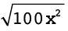
(d) 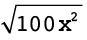
(e)  (f)
(f)
(g)  (h)
(h) 
The cube root of
64x3 is
4x, because (4x)3 = 64x3
4. Write down the cube root of
each of the following expressions.
(a)  (b)
(b) 
(c)  (d)
(d) 
(e)  (f)
(f) 

8.5 Dividing polynomials by integers and monomials
1. Complete
the table.
|
x
|
20
|
10
|
5
|
-5
|
-10
|
-20
|
|
(100x -
5x2)
\div 5x
|
|
|
|
|
|
|
|
20 - x
|
|
|
|
|
|
|
Can you explain your observations?
2. (a) R240 prize money must be shared
equally between 20 netball players. How much should each one
get?
(b) Mpho decided to do the calculations
below. Do not do Mpho's calculations, but think about this:
Will Mpho get the same answer that you got for question
(a)?
(140 \div 20) + (100 \div 20)
(c) Gert decided to do the calculations
below. Without doing the calculations, say whether Gert will
get the same answer that you got for question (a).
(240 \div 12) + (240 \div 8)
3. Do the necessary
calculations to find out whether the following statement are
true or false:
(a) (140 + 100) \div 20 = (140 \div 20) +
(100 \div 20)
(b) 240 \div (12 + 8) = (240 \div 12) + (240
\div 8)
(c) (300 - 60) \div 20 = (300 \div 20) - (60
\div 20)
Division is
right-distributive over addition and subtraction, for
example, (2 + 3) \div 5 = (2 \div 5) + (3 \div 5).
For example (200 + 40) \div 20 = (200
\div 20) + (40 \div 20) = 10 + 2 = 12, and
(500 + 200 - 300) \div 50 = (500 \div
50) + (200 \div 50) - (300 \div 50)
4. Evaluate each expression for
x = 2 and x = 10
(a) (10x2 + 5x) \div 5
(b) (10x2 \div 5) + (5x \div 5)
(c) 2x2 + x (d) (10x2 + 5x) \div 5x
(e) (10x2 \div 5x) + (5x \div 5x)
(f) 2x + 1
The distributive property of division can be
expressed like this:
(x + y) \div
z = (x \div z) + (y \div
z)
(x - y) \div
z = (x \div z) - (y \div
z)
5. (a) Do not do any
calculations. Which of the following expressions do you
think will have the same value as
(10x2 +
20x - 15) \div 5, for x = 10 as well as x
= 2?
2x2 + 20x - 15 10x2 + 20x - 3 2x2 + 4x - 3
(b) Do the necessary calculations to check
your answer.
6. Simplify:
(a) (2x + 2y) \div 2 (b)
(4x + 8y) \div 4
(c) (20xy + 16x) \div
4x (d) (42x - 6) \div 6
(e) (28x4 - 7x3 + x2) \div x2 (f) (24x2 + 16x) \div
8x
(g) (30x2 - 24x) \div
3x
7. Simplify:
(a) (9x2 + xy) \div xy
(b) (48a - 30ab + 16ab2) \div 2a
(c) (3a3 + a2) \div a2 (d) (13a -
17ab) \div a
(e) (3a2 + 5a3) \div a (f)
(39a2b + 13ab +
ab2) \div
ab
The instruction
72 \div 6 may also be written as  .
.
This notation, which
looks just like the common fraction notation, is often used to
indicate division.
Hence, instead of
(10x2 +
20x - 15) \div 5 we may write  .
.
Since
(10x2 +
20x - 15) \div 5 is equivalent to
(10x2 \div
5) + (20x \div 5) - (15 \div 5),
 is equivalent to
is equivalent to  +
+  -
-  .
.
8. Find a simpler
equivalent expression for each of the following expressions
(clearly, these expressions do not make sense ifx =
0).
(a) 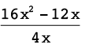 (b) 
(c)  (d)
(d) 
(e)  (f)
(f)
2x2 - 1 
9. In each case check whether the
statement is true for x = 10; x = 100; x = 5; x = 1 and x = -2.
(a)
 = x
= x
(b)
 = x2
= x2
(c)
 = x
= x
(d)
 = 5x2
= 5x2
(e)
 = 53
= 53
(f) 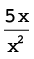 = 
10. Explain why the equations below
are true:
(a)  = 20 - x for all
values of x except
x = 0
= 20 - x for all
values of x except
x = 0
(b) 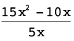 is equivalent to 3x - 2, excluding x = 0.
11. Complete the table:
(Hint: Simplify the expressions first to
save yourself some work!)
12. Simplify
each expression to the equivalent form requiring the fewest
operations.
(a)

(b)

(c)

(d)

(e)

(f)

(g)

(h)
13. Solve the equations.
(a) 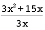 = 20 (b)  = 2
= 2
14. Complete the table.
|
x
|
1,1
|
1,2
|
1,3
|
1,4
|
1,5
|
|
(a)
|

|
|
|
|
|
|
|
(b)
|

|
|
|
|
|
|
|
(c)
|

|
|
|
|
|
|
15. Simplify
the following expressions.
(a)  (b)
(b)  +
+ 
=

=


8.6 Products and squares of binomials
How can we obtain the expanded
form of (x + 2)(x + 3)?
In order to
expand (x + 2)(x + 3), you can first keep
(x + 2) it is, and apply the distributive property:
(x + 2)(x + 3)
= (x + 2)x +
(x + 2)3
= x2 + 2x + 3x +
6
=
x2 +
5x + 6
1.
Describe how can you check whether (x
+ 2)(x + 3) is actually equivalent
to x2
+ 5x + 6.
To expand (x -
y)(x + 3y) it can be written as (x
- y)x + (x - y)3y and the
two parts can then be expanded.
(x - y)(x +
3y)
= (x -
y)x + (x -
y)3y
= x2 -
xy + 3xy -
3y2
= x2 + 2xy
- 3y2
2.
Do some calculations to check whether (x -
y)(x + 3y) and x2 + 2xy -
3y2 are
equivalent. Write the results of your calculations in the table
below.
3. Expand each of these
expressions.
(a) (x + 3)(x + 4) (b) (x + 3)(4 -
x)
(c) (x + 3)(x - 5) (d)
(2x2 + 1)(3x - 4)
(e) (x + y)(x +
2y) (f) (a - b)(2a +
3b)
(g) (k2 +
m)(k2
+ 2m) (h) (2x + 3)(2x -
3)
(i) (5x + 2)(5x - 2) (j)
(ax -
by)(ax + by)
4. Expand
each of these expressions.
(a) (a+ b)(a + b) (b) (a - b)(a - b)
(c)
(x + y)(x + y) (d)
(x
- y)(x -
y)
(e) (2a + 3b)(2a + 3b) (f) (2a - 3b)(2a - 3b)
(g)
(5x +2y)(5x
+2y) (h)
(5x - 2y)(5x -
2y)
(i) (ax + b)(ax + b) (j) (ax - b)(ax - b)
5.
Can you guess the answer to each of the following questions
without working it out as you did in question 3? Try them out
and then check your answers.
Expand
these expressions:
(a) (m + n)(m + n) (b) (m - n)(m - n)
(c)
(3x + 2y)( 3x +
2y) (d)
(3x - 2y)( 3x
- 2y)
All the expressions in
questions 4 and 5 are squares of binomials, for
example (ax +
b)2 and (ax - b)2
6.
Expand:
(a) (ax + b)2 (b) (ax - b)2
(c) (2s + 5)2 (d) (2s - 5)2
(e) (ax + by)2 (f) (ax - by)2
(g) (2s + 5r)2 (h) (2s - 5r)2
7. Expand and simplify.
(a) (4x + 3)(6x + 4) + (3x + 2)(8x + 5)
(b) (4x + 3)(6x + 4) - (3x + 2)(8x + 5)
8.7 Substitution into algebraic expressions
1.
In question 2 you have to find the values of different
expressions, for some given values of x. Look carefully
at the different expressions in the table. Do you think some of
them may be equivalent?
Simplify the longer expression to check whether you end
up with the shorter expression.
2. Complete
the table.
|
x
|
13
|
-13
|
2,5
|
10
|
|
(a)
|
(2x + 3)(3x
- 5)
|
|
|
|
|
|
(b)
|
10x2 + 5x - 7 +
3x2
- 4x - 3
|
|
|
|
|
|
(c)
|
3(10x2 - 5x + 2) -
5x(6x - 4)
|
|
|
|
|
|
(d)
|
13x2 + x - 10
|
|
|
|
|
|
(e)
|
6x2 - x - 15
|
|
|
|
|
|
(f)
|
5x + 6
|
|
|
|
|
3. Complete
this table.
|
x
|
1
|
2
|
3
|
4
|
|
(a)
|
(2x + 3)(5x
- 3) + (10x + 9)(1 - x)
|
|
|
|
|
|
(b)
|

|
|
|
|
|
|
(c)
|
3x(10x - 5)
- 5x(6x - 4)
|
|
|
|
|
|
(d)
|
5x(4x + 3)
- 2x(7 + 13x) + 2x(3x +
2)
|
|
|
|
|
4. Describe any patterns that you
observe in your answers for question 3.
5. Complete
this table.
|
x
|
1,5
|
2,5
|
3,5
|
4,5
|
|
(a)
|
(2x + 3)(5x
- 3) + (10x + 9)(1 - x)
|
|
|
|
|
|
(b)
|

|
|
|
|
|
|
(c)
|
3x(10x - 5)
- 5x(6x - 4)
|
|
|
|
|
|
(d)
|
5x(4x + 3)
- 2x(7 + 13x) + 2x(3x +
2)
|
|
|
|
|
In this chapter, you will find
numbers that make statements true. This is called solution of
equations. You will solve equations in two different ways, by
inspection and by ‘reversing' them.
You will find that two equations can
have the same solution. Such equations are called equivalent
equations. You will also discover that not all statements are
algebraic equations. Some statements are algebraic identities
and others are in fact algebraic impossibilities. You will
learn what the difference is between these three types of
statements.
9.1 Solving equations by
inspection 145
9.2 Solving equations using
additive and multiplicative inverses 146
9.3 Setting up equations
148
9.4 Equations and situations
151
9.5 Solving equations by using
the laws of exponents 153
9
Equations
9.1 Solving equations by inspection
1. Six equations are listed below the table. Use the table to
find out for which of the given values of x it will be
true that the left-hand side of the equation is equal to the
right-hand side.
"Searching" for the solution of
an equation by using tables is called solution by
inspection.
|
x
|
-3
|
-2
|
-1
|
0
|
1
|
2
|
3
|
4
|
|
2x + 3
|
-3
|
-1
|
1
|
3
|
5
|
7
|
9
|
11
|
|
x + 4
|
1
|
2
|
3
|
4
|
5
|
6
|
7
|
8
|
|
9 - x
|
12
|
11
|
10
|
9
|
8
|
7
|
6
|
5
|
|
3x - 2
|
-11
|
-8
|
-5
|
-2
|
1
|
4
|
7
|
10
|
|
10x - 7
|
-37
|
-27
|
-17
|
-7
|
3
|
13
|
23
|
33
|
|
5x + 3
|
-12
|
-7
|
-2
|
3
|
8
|
13
|
18
|
23
|
|
10 - 3x
|
19
|
16
|
13
|
10
|
7
|
4
|
1
|
-2
|
(a) 2x + 3 = 5x + 3 (b)
5x + 3 = 9 - x
(c) 2x + 3 = x + 4 (d)
10x - 7 = 5x + 3
(e) 3x - 2 = x + 4 (f) 9 -
x = 2x + 3
Two equations can have the same
solution. For example, 5x = 10 and x + 2 = 4 have
the same solution; x = 2 is the solution for both
equations.
Two equations are called
equivalent if they have the same solution.
2. Which of the equations in
question 1 have the same solutions? Explain.
9.2 Solving equations using additive and
multiplicative
inverses
1. In each case find the value of
x:
(a)
(b)
2. Complete the flow diagrams.
You have to fill in all the missing numbers.
To find the second input number
you may say to yourself, "After I added 7, I had 12.
What did I have before I added
7?"
(a)

(b)
To find the input number that
corresponds to 13, you may ask yourself, "What did I have before I added 3?"
and then, "What did I have
before I multiplied by 2?"

3. Use your answers for question
2 to check your answers for question 1.
4. Describe the
instructions in flow diagram 2(b) in words, and also with a
symbolic expression.
5. Complete the flow diagram.
This flow diagram is called the
inverse of the flow diagram in question 2(b).

6. Compare the input
numbers and the output numbers of the flow diagrams in question
2(b) and question 5. What do you notice?
7. (a) Add 5 to any number and then subtract
5 from your answer. What do you get?
(b) Multiply any number by 10 and then
divide the answer by 10. What do you get?
If you add a number and
then subtract the same number, you are back where you
started. This is why addition and subtraction are called
inverse operations.
The expression 5x - 3 says"multiply by 5 then
subtract 3".
This instruction can also be given with a flow diagram:

The equation 5x - 3 = 47 can also be written as
a flow diagram:
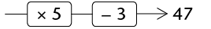
8. Solve the equations
below. You may do this by using the inverse operations. You may
write a flow diagram to help you to see the operations.
(a) 2x + 5 = 23 (b) 3x - 5 =
16
(c) 5x - 60 = -5 (d)
 x + 11 = 19
x + 11 = 19
 x =8
x =8
(e) 10(x + 3) = 88 (f) 2(x -
13) = 14
9.3 Setting up equations
Constructing
equations
You can easily make an equation that
has 5 as the solution. Here is an example:
|
Start by writing the
solution
|
x
|
=
|
5
|
|
Add 3 to both sides
|
x + 3
|
=
|
8
|
|
Multiply both sides by 5
|
5x + 15
|
=
|
40
|
1. What is the solution of the
equation 5x + 15 = 40?
2. Make your own equation with
the solution x = 3.
3. Bongile worked like
this to make the equation 2(x + 8) = 30, but he rubbed
out part of his work:
|
Start by writing the
solution
|
x
|
=
|
|
|
Add 8 to both sides
|
|
=
|
15
|
|
Multiply both sides by 2
|
2(x + 8)
|
=
|
30
|
Complete Bongile's writing to solve the
equation 2(x + 8) = 30.
4. This is how Bongile made a
more difficult equation:
|
Start by writing the
solution
|
x
|
=
|
|
|
Multiply by 3 on both
sides
|
3x
|
=
|
|
|
Subtract 9 from both
sides
|
3x - 9
|
=
|
6
|
|
Add 2x to both
sides
|
5x - 9
|
=
|
2x + 6
|
(a) What was on the right-hand
side before Bongile subtracted 9?
(b) What is the solution of 5x - 9 =
2x + 6?
5. Bongile started with a
solution and he ended up with an equation. Fill in the steps
that Bongile took to make the equation, and solve the
equation:
|
x
|
=
|
|
|
8x
|
=
|
|
|
8x + 3
|
=
|
|
|
3x + 3
|
=
|
35 - 5x
|
solving equations
|
To make an equation, you
can apply the same operation on both sides
|
|
|
|
|
|
To solve an equation,
you can apply the inverse operation on both
sides
|
|

|
x
|
=
|
4
|
|
|
|
Multiply by 8
|
8x
|
=
|
32
|
Divide by 8
|
|
Add
3
|
8x + 3
|
=
|
35
|
Subtract 3
|
|
Subtract 5x
|
3x + 3
|
=
|
35 - 5x
|
Add 5x
|
Use any appropriate method to solve
the equations below.
1. (a) 5x + 3 = 24 - 2x (b)
2x + 4 = -9
x = -6

(c) 3 - x = x - 3 (d)
6(2x + 1) = 0
x = -

2. (a) 4(1 - 2x) = 12 - 7x (b)
8(1 - 3x) = 5(4x + 6)
x = -

(c) 7x - 10 = 3x + 7 (d)
1,6x + 7 = 3,5x + 3,2
x =

x =

number patterns and
equations
1. (a) Which of the following rules will
produce the number pattern given in the second row of the table
below?
A. Term value = 8n where n is
the term number
B. Term value = 6n
- 1 where n is the term number
C. Term value = 6n + 2 where n
is the term number
D. Term value = 10n
- 2 where n is the term number
E. Term value =
5n + 3 where n is the term number
|
Term number
|
1
|
2
|
3
|
4
|
5
|
6
|
7
|
8
|
9
|
|
Term value
|
8
|
13
|
18
|
23
|
28
|
33
|
38
|
43
|
48
|
(b) The sixth term of the sequence has the
value 33. Which term will have the value 143? You may set up
and solve an equation to find out.
(c) Apply rule E to your answer, to check
whether your answer is correct.
2. (a) Write the rule that will produce the
number pattern in the second row of this table. You may have to
experiment to find out what the rule is.
|
Term number
|
1
|
2
|
3
|
4
|
5
|
6
|
7
|
8
|
9
|
|
Term value
|
5
|
8
|
11
|
14
|
17
|
20
|
23
|
26
|
29
|
(b) Which term will have the value 221?
3. The rule for number pattern A
is 4n + 11, and the rule for pattern B is 7n
- 34.
(a) Complete the table below for the two
patterns.
|
Term number
|
1
|
2
|
3
|
4
|
5
|
6
|
7
|
8
|
9
|
|
Pattern A
|
|
|
|
|
|
|
|
|
|
|
Pattern B
|
|
|
|
|
|
|
|
|
|
(b) For which value of n are the
terms of the two patterns equal?
9.4 Equation and situations
1. Consider this situation:
To rent a room in a certain
building, you have to pay a deposit of R400 and then R80 per
day.
(a) How much money do you need to rent the
room for 10 days?
(b) How much money do you need to rent the
room for 15 days?
2. Which of the following
best describes the method that you used to do question 1(a) and
(b)?
A. Total cost = R400 + R80
B. Total cost = 400(number of days + 80)
C. Total cost = 80 \times number of days +
400
D. Total cost = (80 + 400) \times number of
days
3. For how many days can
you rent the room described in question 1, if you have R2 800
to pay?
If you want to know for how many days
you can rent the room if you have R720, you can set up an
equation and solve it:
You know the total cost is R720 and you know
that you can work out the total cost like this:
Total cost =
80x + 400, where x is
the number of days. So, 80x + 400 = 720
and x = 4 days.
In each of the following cases, find
the unknown number by setting up an equation and solving
it.
4. To rent a certain room, you
have to pay a deposit of R300 and then R120 per day.
(a) For how many days can you
rent the room if you can pay a total of R1 740? (If you
experience trouble in setting up the equation, it may help you
to decide first how you will work out what it will cost to rent
the room for 6 days.)
(b) What will it cost to rent the room for
10 days, 11 days and 12 days?
(c) For how many days can you rent the room
if you have R3 300 available?
(d) For how many days can you rent the room
if you have R3 000 available?
5. Ben and Thabo decide
to do some calculations with a certain number. Ben multiplies
the number by 5 and adds 12. Thabo gets the same answer as Ben
when he multiplies the number by 9 and subtracts 16. What is
the number they worked with?
6. The cost of renting a
certain car for a period of x days can be calculated
with the following formula:
Rental cost in rand = 260x
+ 310
What information about renting
this car will you get, if you solve the equation
260x + 310 = 2 910?
7. Sarah paid a deposit
of R320 for a stall at a market, and she also pays R70 per day
rental for the stall. She sells fruit and vegetables at the
stall, and finds that she makes about R150 profit each day.
After how many days will she have earned as much as she has
paid for the stall, in total?
9.5 Solving equations by using the laws of exponents
You may need to look back at Chapter
5 to remember the laws of exponents.
One kind of exponential equation that you deal
with in Grade 9 has one or more terms with a base that is
raised to a power containing a variable.
Example: 2x = 16
When we need to find the
unknown value, we are asking the question: "To what power
must the base be raised for the statement to be
true?"
Example: 2x = 16 Make sure that
the terms with x are on their own on one side.
2x = 24 Write the known term in the same base as the
term with the exponent.
x = 4 Equate the exponents.
In the example above, we can equate
the exponents because the two numbers are equal only when they
are raised to the same power.
1. Solve for x:
(a) 5x - 1 = 125
(b) 2x + 3 =
8
(c) 10x = 10 000 (d) 4x
+ 2 = 64
(e) 7x + 1 = 1 (f)
x0 = 1
x can be any
number except 0.
Example: Solve for x:
3x = 
3x = 3-3 (Rewrite
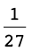 as a number to base 3)
x = -3
(Equate the exponents.)
2. Solve for x.
(a) 7x = (b) 10x = 0,001
(c) 6x =  (d) 10x- 1 = 0,001
(d) 10x- 1 = 0,001
(e) 4-x = (f) 7x = 7-3
In another kind of equation involving
exponents, the variable is in the base.
When we need to find the
unknown value, we are asking the question: "Which number
must be raised to the given power for the statement to be
true?"
For these equations, you should
remember what you know about the powers of numbers such as 2,
3, 4, 5 and 10.
SOLVING EQUATIONS WITH A
VARIABLE IN THE BASE
1. Complete the table below and
answer the questions that follow:
|
x
|
2
|
3
|
4
|
5
|
|
(a)
|
x3
|
23 = 8
|
|
|
|
|
(b)
|
x5
|
25 = 32
|
|
|
|
|
(c)
|
x4
|
24 = 16
|
|
|
|
For what value of x is:
(a) x3 = 64 (b) x5 = 32 (c) x4 = 256
(d) x3 = 8 (e) x4 = 16 (f) x5 = 3 125
2. Solve for x and give a
reason:
(a) x3 = 216 (b)
x2 = 324
(c) x4 = 10 000 (d) 8x =
512
(e) 18x = 324 (f) 6x = 216
1. Ahmed multiplied a number by 5,
added 3 to the answer, and then subtracted the number he
started with. The answer was 11. What number did he start
with?
5x + 3 - x = 11
4x = 8
x = 2
2. Use any appropriate method to
solve the equations.
(a)
3(x - 2) =
4(x + 1) (b)
5(x + 2) = -3(2 -
x)
(c)
1,5x = 0,7x - 24 (d) 5(x + 3) = 5x + 12
(e)
2,5x =
0,5(x + 10) (f)
7(x - 2) = 7(2 -
x)
(g)
 (2x - 3) = 5 (h) 2x - 3(3 + x) = 5x + 9
(2x - 3) = 5 (h) 2x - 3(3 + x) = 5x + 9
x = 6 
Revision 158
- • Whole
numbers 158
- • Integers
160
- • Fractions
161
- • The
decimal notation for fractions 161
- • Exponents
162
- • Patterns
163
- • Functions
and relationships 165
- • Algebraic
expressions 167
- • Equations
169
Assessment 170
Revision
Remember to
show all the steps in your working.

whole numbers
1.
Write all the numbers from the cloud in the table below, and
place a tick in all
the column(s) of the type of numbers they are. The first number
has been completed for you:
2. The Ndlovu family is
travelling to the Kruger National Park on holiday. Here is a
summary of their journey:
|
|
|
|
|
06:12
|
123
564
|
Leave home
|
|
08:32
|
123
785
|
Stop for breakfast and petrol
|
|
09:18
|
123
785
|
Leave petrol station
|
|
11:34
|
124
011
|
Stop for toilet break
|
|
11:51
|
124
011
|
Leave petrol station
|
|
13:32
|
124
175
|
Reach Kruger gate
|
(a) Calculate the length of time the journey
took, in hours. Give your answer as mixed number.
(b) Calculate the average speed of the
journey, correct to one decimal place.
3. A car travelling at an
average speed of 110 km/h takes 2  hours to complete a journey. If the
return journey needs to be completed in 2 hours, calculate the
average speed that must be maintained.
hours to complete a journey. If the
return journey needs to be completed in 2 hours, calculate the
average speed that must be maintained.
4. If four tins of bully beef
cost R75,80, how much money would seven similar tins cost?
5. A farmer has enough
chicken feed to feed 300 hens for 20 days. If he buys 100 more
hens, how long would the same amount of chicken feed last
before it runs out?
6. How long will it take R5 000
invested at 7,2% simple interest p.a. to grow to R5 900?
7. Chardonnay wishes to
buy a new TV set costing R7 499. She does not have enough money
and so needs to buy it on hire purchase. The store requires a
10% deposit and then equal monthly payments of Rx for 2 years. If the simple
interest charged on the account is 15%, calculate the value of
x.
8. How much interest will
Tebogo get on R12 500 deposited for 21 months in a bank account
that provides 5,3% compound interest per annum?
integers
All the
questions in this section should be answered without using a
calculator.
1. Write a number in each
box to make the calculations correct:
(a)
 +
+  = -34 (b)
= -34 (b)  -
-  = -34
= -34
2. These questions show
sequences of numbers. Fill the correct values in the boxes:
(a) 18; 10; 2;
 (b) 2; -10; 50;
(b) 2; -10; 50; 
(c) -6
386; -6 392; -6 398; 
3. This question shows a
number line in which the missing number is halfway between the
other two numbers. Fill the correct value into the box:

4. Calculate the following:
(a) 28 - (-15) (b) (-5)(12)(-7)
(c) 5 + 5 \times -6 (d) 
= 
(e)
= 
5. Augustus ruled the Roman
Empire from 27 BC to AD 14. For how many years did he rule?
fractions
All the questions in this section
should be answered without using a calculator.
1. Simplify the
following:
(a)  (b)
(b)  x2 -
x2
x2 -
x2
=  x4
x4
=  x2
x2
(c) (  xy3)(
xy3)(  y)
y)
2. Simplify the
following:
(a)  (b)
(b)  -
- 
=  x5
x5
= 
= 
(c)  \times
\times  (d)
(d)  \div
\div 
=  \times
\times
= 
= 
THE decimal notation
FOR FRACTIONS
All the questions in this section
should be answered without using a calculator.
1. Calculate the following:
(a) 27,49 - 6,99 (b) 0,03 \times
1,4 (c) 1,44 \div 0,012
2. Simplify the following:
(a)  (b) 3,5x2 - 4,6x2 (c) (1,2x2y3)(5yx2)
(b) 3,5x2 - 4,6x2 (c) (1,2x2y3)(5yx2)
3. Simplify
the following:
(a) (b)  -
-
(c)  \times
\times  (d)
(d)  \div
\div 
exponents
All the questions in this section
should be answered without using a calculator, unless otherwise
specified in the question.
1. Write the following numbers in
scientific notation:
(a) 2 500 001 (b) 0,000 304 5
2. Write the following number in
"normal" notation: 9,45 \times 10-5.
3. Which of the following numbers
is bigger: 4,7 \times 10-9 or 5,12 \times
10-10?
4. Calculate the following,
giving your answer in scientific notation:
(a) (5,9 \times 106) - (4,7
\times 106) (b)
(5,9 \times 106) +
(4,7 \times 105)
(c) (7,2 \times 10-4) \times (2 \times
102)
5. Calculate the
following, giving your answer as an ordinary decimal number. A
calculator may be used:
(a) (6,3 \times 10-4) - (1,9 \times
10-3) (b) (5,8
\times 10-7) \div (8
\times 10-11)
6. Simplify the following,
leaving all answers with positive exponents:
(a) 3-2 (b) 27 \times 6-3 \times 32
(c)  (d) (2x6)-3
(d) (2x6)-3
(e) (2x7)(2,5x-8) (f) (-3a2bc)2(-5ac-2)
(g) 
7. Solve the following
equations:
(a) 3 \times 3x = 81 (b) 2x + 1 = 0,125
(c) 4x + 10 = 74
patterns
1. Create a sequence that
fits this description: the first term is negative, and each
successive term is obtained by squaring the previous term and
then subtracting 10.
Write down the first four
terms of your created sequence.
2. For each of the
following sequences, (i) write in words the rule that describes
the relationship between the terms in the sequence, and (ii)
use the rule to extend the sequence by three more terms:
(a) -5; -2; 10; -20; … (b)
-4,5; -6,25; -8; …
(i) each term is
found by multiplying
(i) repeatedly subtract
1,75 from
(ii)
…; -200; 4 000;
-800 000; …
(ii)
…; -9,75;
-11,5; -13,25;
…
3. In this question you
are given the rule by which each term of the sequence can be
found. In all cases, n is the position of the term.
Determine the first three terms of each of the sequences:
(a) 3 - 5n(b) 2n2 - 3n + 1
4. (a) Write down the rule by which each
term of the sequence can be found (in a similar format to those
given in question 3, where n is the position of the term):
-15; -12; -9; …
(b) Use this rule to find the value of the
150th term of the sequence.
5.
Determine the pattern and then write the missing values in the
table below:
|
Position in sequence
|
1
|
2
|
3
|
4
|
5
|
|
10
|
|
|
|
Value of the term
|
2
|
5
|
10
|
17
|
|
|
|
|
226
|
6. The
picture below shows a pattern created by matchsticks.

(a) Draw your own series of matchstick
patterns in which there is a common difference between each
pattern. It must be different to all the matchstick patterns
shown in Chapter 6 and this chapter, and should contain the
first three
matchstick patterns in the series.
(b) Write in words the rule that describes
the number of matchsticks needed for each new pattern.
(c) Use the rule to determine the missing
values in the table below, and fill them in:
|
Number of the pattern
|
4
|
5
|
6
|
7
|
|
50
|
|
Number of matches needed
|
|
|
|
|
|
|
functions and relationships
1. (a) Use the given formula to calculate
the values of t,
given the values of p:

(b) Use the given formula to calculate the
missing input values, p, and output values,
t.

2. Consider the values in the
table below:
|
x
|
-2
|
-1
|
0
|
1
|
|
4
|
|
12
|
|
|
|
y
|
-4
|
-1
|
2
|
5
|
|
|
|
|
|
65
|
(a) Write, as an algebraic formula, the rule
for finding the y-values in the table. The
formula is in the form y = ax + b, where a and b are integers.
(b) Use the rule to determine the missing
values in the table, and fill them in.
3. Consider the graph shown
below:

(a) Complete the following table by reading
off the coordinates of points on the graph:
(b) Write down an algebraic formula for the
graph, in the form y = …
(c) Complete the flow diagram below to
represent the relationship shown on the graph:
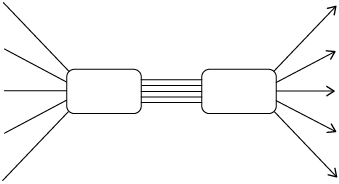
algebraic expressions
1. Simplify
as far as possible:
(a) (2x2 - 4x2)3
(b) -2x2(5x3 - 3x2 + 2x - 5)
(c) (4b2 - 7b2)(5b-2 + 3b-1 - 7)
(d) 
(e) (2x + 5)(3x - 1)
(f) (4a - 3)2
(g) 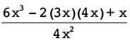
2. Simplify as far as
possible:
(a) 4(a- 2b) - 5(3b + a)
(b) 5 + 2(x2 + 5x + 3)
(c) 3x(2x2 - 3x + 4) - 3(5 - 2x)
(d) (a + 3b - 2c) - (4a + b - c) - (2b - c +
3a)
(e) 4(3x2 + x - 2) - (x + 3)2
equations
1. Solve the following
equations:
(a) 4 - 3x = -2 (b) 4(2x - 1)
= -8
(c) 2x + 1 = 3(2x - 1) (d)
(x + 2)(x - 4) = x2 + 5x - 1
2. Thomas is
z years old and Tshilidzi is twice as old as
Thomas. The sum of their ages is 42.
(a) Write this information in an equation
using the variable z.
(b) Solve the equation to find Tshilidzi's
age.
3. The base of a triangle
is (1,5x + 6) cm
and the height is 4 cm. The area of the triangle is 24
cm2.
(a) Write this information in an equation in
x.
(b) Solve the equation to determine the
value of x.
(c) What is the length of the base of the
triangle?
4. Solve forx:
(a) 3x = 9 (b) 2x + 1 = 16
Assessment
In this section, the numbers in
brackets at the end of a question indicate the number of marks
the question is worth. Use this information to help you
determine how much working is needed. The total number of marks
allocated to the assessment is 75.

1. Gareth completed the following
number classification:
|
|
|
|
|
|
|
|
|
|
-1,5
|
✓
|
|
✓
|
✓
|
|
|

|
✓
|
|
|
✓
|
|
(a) Gareth
has made some errors. Complete the following table by putting
the ticks in the correct boxes: (2)
|
|
|
|
|
|
|
|
|
|
-1,5
|
|
|
|
|
|
|

|
|
|
|
|
|
(b) Explain why you have made the
changes you have. (2)
2. Pheto
invested R1 500 for 2 years in a bank account. At the end of
this period, the initial investment had grown to R1 717,50.
What simple interest rate did the bank give him? (Assume that
the rate remained unchanged for the entire period.) Give your
answer as a percentage. (3)
3. A Benthian changed 2 500 Bendollars to Darsek when he
visited the Klingon Empire, and received 2 000 Darsek after the
3% commission had been charged. Determine the Bendollars :
Dasek exchange rate and then copy and complete the following
sentence: "1 Klingon Darsek = ___ Bendollars". The missing
value should be written correct to three decimal places.
(3)
4. What is the difference in height between the highest point
on the Earth's surface (Mt Everest: 8 848 m above sea level) and the
deepest point of the sea (the bottom of the Marianas Trench, 10
994 m below sea
level)? (1)
5. Write down two numbers that subtract to give an answer of
21. One of the numbers must be positive and the other negative.
(2)
6. (a) What is the value of
(-1)1000 001?
(1)
(b) Explain how you can know the
answer in (a) without needing a calculator. (1)
7. Simplify the following, without using a calculator. Show all
steps of your working:
(a)
 x -
x -
 x + 1,125x (2)
x + 1,125x (2)
(b)
(4)
(c)
 \times
\times  \div 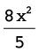 (4)
\div 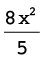 (4)
(d) + [8x(x + 1) \times
 ] (5)
] (5)
8. The
diameter of a carbon atom is 0,000000000154 metres. Write this
in scientific notation. (2)
9. Simplify the following,
leaving all answers with positive exponents:
(a) 3-9 \times 34 (b)  (5)
(5)
= 
10. Solve for x: 92x - 3 = 3x (3)
x = 2
11. Consider the following
sequence: 6 000; -1 500; 375; …
(a) Extend the sequence by two
more terms. (2)
(b) Is this the correct rule for
the sequence (where n is the position of the term
in the sequence): 6 000(0,25)n - 1? Explain your answer. (2)
12. The
following figure shows a pattern created by matchsticks.

(a) Draw the 5th diagram in the
pattern alongside the picture above. (2)
(b) The first two terms in the
sequence created by the number of matchsticks in each pattern
is 4; 11. Write down the next three terms in the sequence.
(2)
(c) Write in words the rule that
describes the relationship between the terms in the sequence.
(2)
13. Consider the values in the
table below:
|
x
|
-2
|
-1
|
0
|
1
|
|
5
|
|
16
|
|
|
|
y
|
-10
|
-3
|
-2
|
-1
|
|
|
|
|
|
7 998
|
(a) Write the rule for finding
the y-values in the
table as an algebraic formula. (2) (Hint: Look at the cubes of
the numbers.)
(b) Use the rule to determine the
missing values in the table, and fill them in. (3)
14. Consider the following
graph:

(a) Complete the following table
by reading off the coordinates of points on the graph: (2)
(b) Write down an algebraic
formula for the graph in the form y = … (2)
15. Simplify:
(a) (3)
(b) (3x + 1)(3x - 1) (2)
(c) 4 - 3(2x + 3)2 (3)
16. Solve the following
equations:
(a) x2 + 5x - 1- x2 - x + 3 = 3(x - 4) (4)
(b) 2(2x + 3) = (3x - 1)(-2) (4)